6 Modeling Systems with Advanced Process Concepts
LEARNING OBJECTIVES
To be able to model non-stationary arrivals using arrival schedules.
To be able to model the staffing/scheduling and failure/repair of resources using resource capacity schedules and failures.
To be able to capture statistics over specific periods of time.
To be able to model balking and reneging within queuing situations.
To be able to model situations involving holding and signaling entities.
To be able to model situations involving picking stations, picking up entities into groups, dropping off entities from groups, and generic station modeling.
This chapter tackles a number of miscellaneous topics that can enhance your modeling capabilities. The chapter first examines the modeling of non-stationary arrival processes. This will motivate the exploration of additional concepts in resource modeling, including how to incorporate time varying resource staffing schedules. This will enable you to better model and tabulate the effects of realistic staff changes within systems. Because non-stationary arrivals affect how statistics should be interpreted, we will also study how to collect statistics over specific periods of time.
The chapter also covers some useful modeling situation involving how entities interact within Arena. The first situation that we will see is that of reneging from a queue. This will introduce the SEARCH and REMOVE modules within Arena. Then, we will study advanced concepts involving how to signal entities based on general conditions within the system. In my opinion, this is one of the most useful modeling constructs that you will need within practice. Finally, the chapter covers some miscellaneous (but useful) topics. Specifically, as entities move through the model, they often are formed into groups. Arena’s constructs for grouping and un-grouping entities will be presented. Grouping entities is similar in some respects to batching entities, but we will see that Arena’s grouping/ungrouping functionality can lead to additional modeling flexibility. Let’s get started by looking at how time dependent arrivals can be generated.
6.1 Non-stationary Processes
If a process does not depend on time, it is said to be stationary. When a process depends on time, it is said to be non-stationary. The more formal definitions of stationary/non-stationary are avoided in the discussion that follows.
There are many ways in which you can model non-stationary (time varying) processes in your simulation models. Many of these ways depend entirely on the system being studied and through that study appropriate modeling methods will become apparent. For example, suppose that workers performing a task learn how to more efficiently perform the task every time that they repeat the task. The task time will depend on the time (number of previously performed tasks). For this situation, you might use a learning curve model as a basis for changing the task times as the number of repetitions of the task increases.
As another example, suppose the worker’s availability depends on a schedule, such as having a 30-minute break after accumulating so much time. In this situation, the system’s resources are dependent on time. Modeling this situation is described later in this chapter.
Let’s suppose that the following situation needs to be modeled. Workers are assigned a shift of 8 hours and have a quota to fill. Do you think that it is possible that their service times would, on average, be less during the latter part of the shift? Sure. They might work faster in order to meet their quota during the latter part of the shift. If you did not suspect this phenomenon and performed a time study on the workers in the morning and fit a distribution to these data, you would be developing a distribution for the service times during the morning. If you applied this distribution to the entire shift, then you may have a problem matching your simulation throughput numbers to the real throughput.
As you can see, if you suspect that a non-stationary process is involved, then it is critical that you also record the time that the observation was made. The time series plot that was discussed for input modeling helps in assessing non-stationary behavior; however, it only plots the order in which the data were collected. If you collect 25 observations of the service time every morning, you might not observe non-stationary behavior. To observe non-stationary behavior it is important to collect observations across periods of time.
One way to better plan your observations is to randomize when you will take the observations. Work sampling methods often require this. The day is divided into intervals of time and the intervals randomly selected in which to record an activity. By comparing the behavior of the data across the intervals, you can begin to assess whether time matters in the modeling as demonstrated in Section B.3.1. Even if you do not divide time into logical intervals, it is good practice to record the date and time for each of the observations that you make so that the observations can later be placed into logical intervals. As you may now be thinking, modeling a non-stationary process will take a lot of care and more observations than a stationary process.
A very common non-stationary process that you have probably experienced is a non- stationary arrival process. In a non-stationary arrival process, the arrival process to the system will vary by time (e.g., by hour of the day). Because the arrival process is a key input to the system, the system will thus become non-stationary. For example, in the drive-through pharmacy example, the arrival of customers occurred according to a Poisson process with mean rate \(\lambda\) per hour.
As a reminder, \(\lambda\) represents the mean arrival rate or the expected number of customers per unit time. Suppose that the expected arrival rate is five per hour. This does not mean that the pharmacy will get five customers every hour, but rather that on average five customers will arrive every hour. Some hours will get more than five customers and other hours will get less. The implication for the pharmacy is that they should expect about five per hour (every hour of the day) regardless of the time of day. Is this realistic? It could be, but it is more likely that the mean number of arriving customers will vary by time of day. For example, would you expect to get five customers per hour from 4 a.m. to 5 a.m., from 12 noon to 1 p.m., from 4 p.m. to 6 p.m.? Probably not! A system like the pharmacy will have peaks and valleys associated with the arrival of customers. Thus, the mean arrival rate of the customers may vary with the time of day. That is, \(\lambda\) is really a function of time, \(\lambda(t)\).
To more realistically model the arrival process to the pharmacy, you need to model a non-stationary arrival process. Let’s think about how data might be collected in order to model a non-stationary arrival process. First, as in the previous service time example, you need to think about dividing the day into logical periods of time. A pilot study may help in assessing how to divide time, or you might simply pick a convenient time division such as hours. You know that the CREATE module requires a distribution that represents the time between arrivals. Ideally, you should collect the time of every arrival, \(T_i\), throughout the day. Then, you can take the difference among consecutive arrivals, \(T_i - T_{i-1}\) and fit a distribution to the inter-arrival times. Looking at the \(T_i\) over time may help to assess whether you need different distributions for different time periods during the day. Suppose that you do collect the observations and find that three different distributions are reasonable models given the following data:
Exponential, \(E[X] = 60\), for midnight to 8 a.m.
Lognormal, \(E[X] = 12\), \(Var[X] = 4\), for 8 a.m. to 4 p.m.
Triangular, min = 10; mode = 16; max = 20, for 4 p.m. to midnight
One simple method for implementing this situation is to CREATE a logical entity that selects the appropriate distribution for the current time. In other words, schedule a logical entity to arrive at midnight so that the time between arrival distribution can be set to exponential, schedule an entity to arrive at 8 a.m. to switch to lognormal, and schedule an entity to arrive at 4 p.m. to switch to triangular. This can easily be accomplished by holding the distributions within an arrayed expression and using a clock entity to determine which period of time is active and indexing into the arrayed expression accordingly. Clearly, this varies the arrival process in a time-varying manner. There is nothing wrong with this modeling approach if it works well for the situation. In taking such an approach, you need a lot of data. Not only do you need to record the time of every arrival, but you need enough arrivals in order to adequately fit distributions to the time between events for various time periods. This may or may not be feasible in practice.
Often in modeling arrival processes, you cannot readily collect the actual times of the arrivals. If you can, you should try, but sometimes you just cannot. Instead, you are limited to a count of the number of arrivals in intervals of time. For example, a computer system records the number of people arriving every hour but not their individual arrival times. This is not uncommon since it is much easier to store summary counts than it is to store all individual arrival times. Suppose that you had count data as shown in Table 6.1.
| Interval | Mon | Tue | Wed | Thurs | Fri | Sat | Sun |
|---|---|---|---|---|---|---|---|
| 12 am – 6 am | 3 | 2 | 1 | 2 | 4 | 2 | 1 |
| 6 am - 9 am | 6 | 4 | 6 | 7 | 8 | 7 | 4 |
| 9 am - 12 pm | 10 | 6 | 4 | 8 | 10 | 9 | 5 |
| 12 pm - 2 pm | 24 | 25 | 22 | 19 | 26 | 27 | 20 |
| 2 pm - 5 pm | 10 | 16 | 14 | 16 | 13 | 16 | 15 |
| 5 pm - 8 pm | 30 | 36 | 26 | 35 | 33 | 32 | 18 |
| 8 pm - 12 am | 14 | 12 | 8 | 13 | 12 | 15 | 10 |
Of course, how the data are grouped into intervals will affect how the data can be modeled. Grouping is part of the modeling process. Let’s accept these groups as appropriate for this situation. Looking at the intervals, you see that more arrivals tend to occur from 12 pm to 2 pm and from 5 pm to 8 pm. As discussed in Section B.3.1, we could test for this non-stationary behavior and check if the counts depend on the time of day. It is pretty clear that this is the case for this situation. Perhaps this corresponds to when people who visit the pharmacy can get off of work. Clearly, this is a non-stationary situation. What kinds of models can be used for this type of count data?
A simple and often reasonable approach to this situation is to check whether the number of arrivals in each interval occurs according to a Poisson distribution. If so, then you know that the time between arrivals in an interval is exponential. When you can divide time so that the number of events in the intervals is Poisson (with different mean rates), then you can use a non-stationary or non-homogeneous Poisson process as the arrival process.
Consider the first interval to be 12 am to 6 am; to check if the counts are Poisson in this interval, there are seven data points (one for every day of the week for the given period). This is not a lot of data to use to perform a chi-square goodness-of-fit test for the Poisson distribution. So, to do a better job at modeling the situation, many more days of data are needed. The next question is: Are all the days the same? It looks like Sunday may be a little different than the rest of the days. In particular, the counts on Sunday appear to be a little less on average than the other days of the week. In this situation, you should also check whether the day of the week matters to the counts. As we illustrated in Section B.3.1, one method of doing this is to perform a contingency table test.
Let’s assume for simplicity that there is not enough evidence to suggest that the days are different and that the count data in each interval is well modeled with a Poisson distribution. In this situation, you can proceed with using a non-stationary Poisson process. From the data you can calculate the average arrival rate for each interval and the rate per hour for each interval as shown in Table 6.2. In the table, 2.14 is the average of the counts across the days for the interval 12 am to 6 pm. In the rate per hour column, the interval rate has been converted to an hourly basis by dividing the rate for the interval by the number of hours in the interval. Figure 6.1 illustrates the time-varying behavior of the mean arrival rates over the course of a day.
| Interval | Avg. | Length (hrs) | Rate per hour |
|---|---|---|---|
| 12 am – 6 am | 2.14 | 6 | 0.36 |
| 6 am - 9 am | 6.0 | 3 | 2.0 |
| 9 am - 12 pm | 7.43 | 3 | 2.48 |
| 12 pm - 2 pm | 23.29 | 2 | 11.645 |
| 2 pm - 5 pm | 14.29 | 3 | 4.76 |
| 5 pm - 8 pm | 30.0 | 3 | 10 |
| 8 pm - 12 am | 12.0 | 4 | 3.0 |
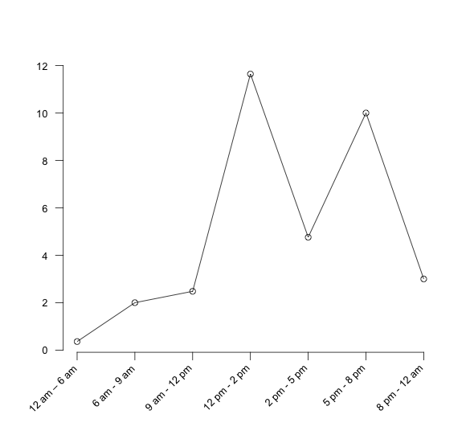
The two major methods by which a non-stationary Poisson process can be generated are thinning and rate inversion. Both methods will be briefly discussed; however, the interested reader is referred to (Leemis & Park, 2006) or (Ross, 1997) for more of the theory underlying these methods. Before these methods are discussed, it is important to point out that the naive method of using different Poisson processes for each interval and subsequently different exponential distributions to represent the inter-arrival times could be used to model this situation by switching the distributions as previously discussed. However, the switching method is not technically correct for generating a non-stationary Poisson process. This is because it will not generate a non-stationary Poisson process with the correct probabilistic underpinnings. Thus, if you are going to model a process with a non-stationary Poisson process, you should use either thinning or rate inversion to be technically correct.
6.1.1 Thinning Method
For the thinning method, a stationary Poisson process with a constant rate,\(\lambda^{*}\), and arrival times, \(t_{i}^{*}\), is first generated, and then potential arrivals, \(t_{i}^{*}\), are rejected with probability:
\[p_r = 1 - \frac{\lambda(t_{i}^{*})}{\lambda^{*}}\]
where \(\lambda(t)\) is the mean arrival rate as a function of time. Often, \(\lambda^{*}\) is set as the maximum arrival rate over the time horizon, such as:
\[\lambda^{*} = \max\limits_{t} \lbrace \lambda(t) \rbrace\]
In the example, \(\lambda^{*}\) would be the mean of the 5 pm to 8 pm interval, \(\lambda^{*} = 11.645\). The following pseudo-code for implementing the thinning method creates entities at the maximum rate and thins them according to which period is currently active.
DECIDE with chance, \(1 - \frac{\lambda(t_{i}^{*})}{\lambda^{*}}\)
IF accepted THEN
Go to Label B
ELSE
DISPOSE
END IF
END DECIDE
B: enter model and use arrival
An array stores each arrival rate for the intervals, and a variable is used to hold the maximum arrival rate over the time horizon. To implement the arrival rate function, the code creates a logical entity that keeps track of the current interval as a variable that can be used to index the array of arrival rates. If the simulation lasts past the time horizon of the arrival rate function, then the variable that keeps track of the interval should be reset to start counting from the first period.
A: ASSIGN vPeriod = vPeriod + 1
DECIDED IF vPeriod < vNumPeriods THEN
DELAY for period length
ELSE
vPeriod = 0
END DECIDE
GO TO Label A:
One of the exercises in this chapter requires implementing the thinning algorithm in . The theoretical basis for why thinning works can be found in (Ross, 1997).
6.1.2 Rate Inversion Method
The second method for generating a non-stationary Poisson process is through the rate inversion algorithm. In this method, a \(\lambda = 1\) Poisson process is generated, and the inverse of the mean arrival rate function is used to re-scale the times of arrival to the appropriate scale. This section does not discuss the theory behind this algorithm. Instead, see (Leemis & Park, 2006) for further details of the theory, fitting, and the implementation of this method in simulation. This method is available for piece-wise constant-rate functions in by using an Arrivals Schedule associated with a CREATE module. Let’s see how to implement the example using an Arrivals Schedule.
The following is available in the file PharmacyModelNSPP.doe that accompanies this chapter. The first step in implementing a non-stationary Poisson process in is to define the intervals and compute the rates per hour as per Table 6.2. It is extremely important to have the rates on a per hour basis. The SCHEDULE module is a data module on the Basic Process panel.
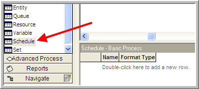
Figure 6.2 illustrates where to find the SCHEDULE in the Basic Process panel. To use the SCHEDULE module, double-click on the data module area to add a new schedule. Schedules can be of type Capacity, Arrival, and Other. Right-clicking on the row and using Edit via Dialog will give you the SCHEDULE dialog window. The text boxes for the SCHEDULE dialog follow:
- Format Type
-
Schedules can be defined as a collection of value, duration pairs (Duration) or they can be defined using the calendar editor. The calendar editor allows for the input of a complex schedule that can be best described by a Gregorian calendar (i.e., days, months, etc.).
- Type
-
Capacity refers to time varying schedules for resources. Arrival refers to non- stationary Poisson arrivals. Other can be used to represent other types of time delayed schedules.
- Time Units
-
This field represents how the time units for the durations will be interpreted. The field only refers to the durations, not the arrival rates.
- Scale Factor
-
This field can be used to easily change all the values in the duration value pairs.
- Durations
-
The length of time of the interval for the associated value. Once all the durations have been executed, the schedule will repeat unless the last duration is left infinite.
- Value
-
This field represents either the capacity to be used for the resource or the arrival rate (in entities per hour), depending on which type of schedule was specified.
- Name
-
Name of the module.
The SCHEDULE module offers a number of ways in which to enter the information required for the schedule. The most straightforward method is to enter each value and duration pair using the Add button on the dialog box. You will be prompted for each pair. In this case, the arrival rate (per hour) and the duration that the arrival rate will last should be entered. The completed dialog entries are shown in Figure 6.3.
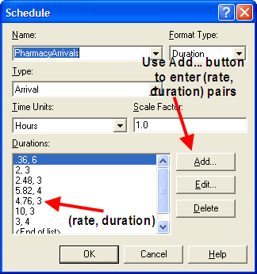
Note that the arrival rates are given per hour. Not entering the arrival rates per hour is a common error in using this module. Even if you specify the time units of the dialog as minutes, the arrival rates must be per hour. The time units only refer to the duration values. The duration values can also be entered using a spreadsheet like view.
Once the schedule has been defined, the last step is to indicate in the CREATE module that it should use the SCHEDULE. This is shown in Figure 6.4 where the Time Between Arrivals Type has been specified as Schedule with the appropriate Schedule Name. The schedule as in Figure 6.3 shows that the duration values add up to 24 hours so that a full day’s worth of arrival rates are specified. If you simulate the system for more than one day, what will happen on the second day? Because the schedule has a duration, value pair for each interval, the schedule will repeat after the last duration occurs. If the schedule is specified with an infinite last duration, the value specified will be used for the rest of the simulation and the schedule will not repeat.
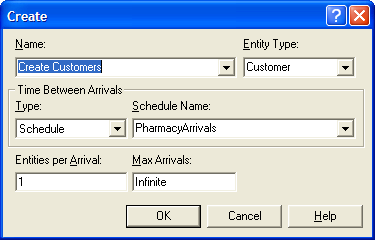
As indicated in this limited example, it is relatively easy to model a non-stationary Poisson arrival process within Arena. If the arrival process to the system is non-stationary, then it is probably a good idea to vary the resources available in they system according to the arrival pattern. The next section discusses how to extend the modeling of resources to include time varying behavior as well as the ability to fail at random points in time.
6.2 Advanced Resource Modeling
From previous modeling, a resource can be something that an entity uses as it flows through the system. If the required units of the resource are available for the entity, then the units are allocated to the entity. If the required units are unavailable for allocation, the entity’s progress through the model stops until the required units become available. So far, the only way in which the units could become unavailable was for the units to be seized by an entity. The seizing of at least one unit of a resource causes the resource to be considered busy. A resource is considered to be in the idle state when all units are idle (no units are seized). Thus, in previous modeling a resource could be in one of two states: Busy or Idle. This section discusses the other two default states that permits for resources: Failed and Inactive.
When specifying a resource, its capacity must be given. The capacity represents the maximum number of units of the resource that can be seized at any time. In previous modeling, the capacity of the resource was fixed. That is, the capacity did not vary as a function of time. When the capacity of a resource was set, the resource had that same capacity for the entire simulation; however, in many situations, the capacity of a resource can vary with time. For example, in the pharmacy model, you might want to have two or more pharmacists staffing the pharmacy during peak business hours. This type of capacity change is predictable and can be managed via a staffing schedule. Alternatively, the changes in capacity of a resource might be unpredictable or random. For example, a machine being used to produce products on a manufacturing line may experience random failures that require repair. During the repair time, the machine is not available for production. The situations of scheduled capacity change and random capacity change define the Inactive and Failed states within modeling.
There are two key resource variables for understanding resources and their states.
- MR(Resource ID)
-
Resource capacity. MR returns the number of capacity units currently defined for the specified resource. This value can be changed by the user via resource schedule or through the use of the ALTER block.
- NR(Resource ID)
-
Number of busy resource units. Each time an entity seizes or preempts capacity units of a resource, the NR variable changes accordingly. NR is not user-assignable; it is an integer value.
The index Resource ID should be the unique name of the resource or its construct number. These variables can change over time for a resource. The changing of these variables along with the possibility of a resource failing defines the possible states of a resource. These states are:
- Idle
-
A resource is in the idle state when all units are idle and the resource is not failed or inactive. This state is represented by the constant, IDLE_RES, which evaluates to the number (-1).
- Busy
-
A resource is in the busy state when it has one or more busy (seized) units. This state is represented by the constant, BUSY_RES, which evaluates to the number (-2).
- Inactive
-
A resource is in the inactive state when it has zero capacity and is not failed. This state is represented by the constant, INACTIVE_RES, which evaluates to the number (-3).
- Failed
-
A resource is in the failed state when a failure is currently acting on the resource. This state is represented by the constant, FAILED_RES, which evaluates to the number (-4).
The special function STATE(Resource ID) indicates the current state of the resource. For example, STATE(Pharmacist) = = BUSY_RES will return true if the resource named Pharmacist is currently busy. Thus, the STATE() function can be used in conditional statements and within the environment (e.g. variable animation) to check the state of a resource.
How do we check if a resource is busy? You can use either of the two following expressions to check if a resource is busy: 1) STATE(Resource ID ) == BUSY_RES, or 2) NR(Resource ID ) > 0, where Resource ID is the name of your resource that you want to check.
The function STATE( Resource ID) returns the current state of the specified Resource ID as defined in the Statesets option for the resource. The STATE variable returns an integer number corresponding to the position within the specified Resource ID’s associated stateset. It also may be used to assign a new state to the resource. To vary the capacity of a resource, you can use the SCHEDULE module on the Basic Process panel, the Calendar Schedules builder, or the ALTER block on the Blocks panel. Only resource schedules will be presented in this text. The Calendar Schedule builder (Edit \(>\) Calendar Schedule) allows the user to define resource capacities in relation to a Gregorian calendar. For more information on this, please refer to the help system. The ALTER block can be used within the model window to invoke capacity changes based on specialized control logic. The ALTER block allows the capacity of the resource to be increased or decreased by a specified amount.
6.2.1 Scheduled Capacity Changes
In the pharmacy model, suppose that there were two pharmacists available at the beginning of the day to serve the drive through window. During the first 2 hours of the day, there were 2 pharmacists, then during the next 4 hours one of the pharmacists was not scheduled to work. In addition, suppose that this on and off pattern of availability repeated itself every 6 hours. This situation can be modeled with an activity diagram by indicating that the resource capacity is decreased or increased at the appropriate times. Figure 6.5 illustrates this concept. The diagram has been augmented with the ALTER keyword, to indicate the capacity change. Conceptually, a “schedule entity” is created in order to cycle through the pharmacist’s schedule. At the end of the first 2 hour period the capacity is decreased to 1 pharmacist. Then, after the 4 hour delay, the capacity is increased back up to the 2 pharmacists. This is essentially how you utilize the ALTER block within a model. Please refer to Pegden et al. (1995) and the help system for further information on the ALTER block. As can be seen in the figure, this pattern can be easily extended for multiple capacity changes and duration. This is what the SCHEDULE module does in an easier to use form.
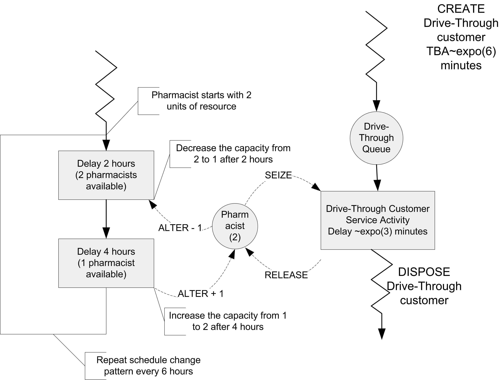
As an example, consider the following illustration of the SCHEDULE module based on a modified version of Smarts139-ResourceScheduleExample.doe, an SMART file. In this system, customers arrive according to a Poisson process with a rate of 1 customer per minute. The service times of the customers are distributed according to a triangular distribution with parameters (3, 4, 5) in minutes. Each arriving customer requires 1 unit of a single resource when receiving service; however, the capacity of the resource varies with time. Let’s suppose that two, 480 minute shifts, of operation will be simulated. Assuming that the first shift starts at time zero, each shift is staffed with the same pattern, which varies according to the values shown in Table 6.3. With this information, you can easily setup the resource in to follow the staffing plan for the two shifts. This is done by first defining the schedule using the SCHEDULE module and then indicating that the resource should follow the schedule within the appropriate RESOURCE module.
| Shift | Start time | Stop time | # Available | Duration |
|---|---|---|---|---|
| 1 | 0 | 60 | 2 | 60 |
| 1 | 60 | 180 | 3 | 120 |
| 1 | 180 | 360 | 9 | 180 |
| 1 | 360 | 480 | 6 | 120 |
| 2 | 480 | 540 | 2 | 60 |
| 2 | 540 | 660 | 3 | 120 |
| 2 | 660 | 840 | 9 | 180 |
| 2 | 840 | 960 | 6 | 120 |
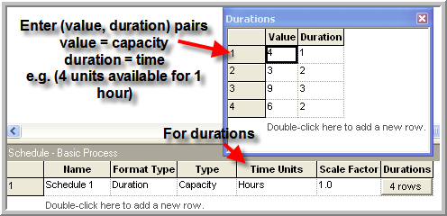
To setup the schedule, there are a number of schedule editing formats available. Figure 6.6 shows the schedule spreadsheet editor for this example. In the data sheet, you can enter (value, duration) pairs that represent the capacity and the duration of time that the capacity will be available. The schedule must be given a name, format type (Duration), type (Capacity for resources), and time units (hours in this case). The scale factor field does not apply to capacity type schedules.
The Schedule dialog box is also useful in entering a schedule. The method of schedule editing is entirely your preference. Arena also allows schedules to be read in from Excel.
In the SCHEDULE module, only the schedule for the first 480 minute shift was entered. What happens when the duration specified by the schedule are completed? The default action is to repeat the schedule indefinitely until the simulation run length is completed. If you want a specific capacity to remain for entire run you can enter a blank duration. This defaults the duration to infinite. The schedule will not repeat so that the capacity will remain at the specified value when the duration is invoked.
Once the schedule has been defined, you need to specify that the resource will follow the schedule by changing its Type to “Based on Schedule" as shown in Figure 6.7. In addition, you must specify the rule that the resource will use if there is a schedule change and it is currently seized by entities. This is called the Schedule Rule. There are three rules available:
- Ignore
-
starts the time duration of the schedule change or failure immediately, but allows the busy resource to finish processing the current entity before effecting the capacity change.
- Wait
-
waits until the busy resource has finished processing the current entity before changing the resource capacity or starting the failure and starting the time duration of the schedule change/failure.
- Preempt
-
interrupts the currently-processing entity, changes the resource capacity and starts the time duration of the schedule change or failure immediately. The resource will resume processing the preempted entity as soon as the resource becomes available (after schedule change/failure).
The wait rule has been used in Figure 6.7. Let’s discuss a bit more on how these rules function with an example.
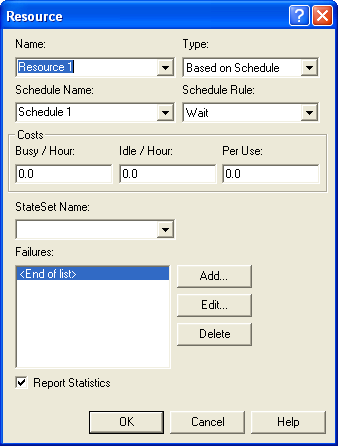
Let’s suppose that your simulation professor has office hours throughout the day, except from 12-12:30 pm for lunch. In addition, since your professor teaches simulation using , he or she follows Arena’s rules for capacity changes. What happens for each rule if you arrive at 11:55 am with a question?
Ignore Case 1:
You arrive at 11:55 am with a 10 minute question and begin service.
At Noon, the professor gets up and hangs a Lunch in Progress sign.
Your professor continues to answer your question for the remaining service time of 5 minutes.
You leave at 12:05 pm.
Whether or not there are any students waiting in the hallway, the professor still starts lunch.
At 12:30 pm the professor finishes lunch and takes down the lunch in progress sign. If there were any students waiting in the hallway, they can begin service.
The net effect of case 1 is that the professor lost 5 minutes of lunch time. During the 30 minute schedule break, the professor was busy for 5 minutes and inactive for 25 minutes.
Ignore Case 2:
You arrive at 11:55 am with a 45 minute question and begin service.
At Noon, the professor gets up and hangs a Lunch in Progress sign.
Your professor continues to answer your question for the remaining service time of 40 minutes.
At 12:30 pm the professor gets up and takes down the lunch in progress sign and continues to answer your question.
You leave at 12:40 pm
The net effect of case 2 is that the professor did not get to eat lunch that day. During the 30 minute scheduled break, the professor was busy for 30 minutes.
This rule is called Ignore since the scheduled break may be ignored by the resource if the resource is busy when the break occurs. Technically, the scheduled break actually occurs and the time that was scheduled is considered as unscheduled (inactive) time.
Let’s assume that the professor is at work for 8 hours each day (including the lunch break). But because of the scheduled lunch break, the total time available for useful work is 450 minutes. In case 1, the professor worked for 5 minutes more than they were scheduled. In case 2, the professor worked for 30 minutes more than they were scheduled. As will be indicated shortly, this extra work time, must be factored into how the utilization of the resource (professor) is computed. Now, let’s examine what happens if the rule is Wait.
Wait Case 1:
You arrive at 11:55 am with a 10 minute question and begin service.
At Noon, the professor’s lunch reminder rings on his or her computer. The professor recognizes the reminder but doesn’t act on it, yet.
Your professor continues to answer your question for the remaining service time of 5 minutes.
You leave at 12:05 pm. The professor recalls the lunch reminder and hangs a Lunch in Progress sign. Whether or not there are any students waiting in the hallway, the professor still hangs the sign and starts a 30 minute lunch.
At 12:35 pm the professor finishes lunch and takes down the lunch in progress sign. If there were any students waiting in the hallway, they can begin service.
Wait Case 2:
You arrive at 11:55 am with a 45 minute question and begin service.
At Noon, the professor’s lunch reminder rings on his or her computer. The professor recognizes the reminder but doesn’t act on it, yet.
Your professor continues to answer your question for the remaining service time of 40 minutes.
You leave at 12:40 pm. The professor recalls the lunch reminder and hangs a Lunch in Progress sign. Whether or not there are any students waiting in the hallway, the professor still hangs the sign and starts a 30 minute lunch.
At 1:10 pm the professor finishes lunch and takes down the lunch in progress sign. If there were any students waiting in the hallway, they can begin service.
The net effect of both these cases is that the professor does not miss lunch (unless the student’s question takes the rest of the afternoon !). Thus, in this case the resource will experience the scheduled break after waiting to complete the entity in progress. Again, in this case, the tabulation of the amount of busy time may be affected by when the rule is invoked. Now, let’s consider the situation of the Preempt rule.
Preempt Case 1:
You arrive at 11:55 am with a 10 minute question and begin service.
At Noon, the professor’s lunch reminder rings on his or her computer. The professor gets up, pushes you into the corner of the office, hangs the Lunch in Progress sign and begins a 30 minute lunch. If there are any students waiting in the hallway, they continue to wait.
You wait patiently in the corner of the office until 12:30 pm.
At 12:30 pm the professor finishes lunch, takes down the lunch in progress sign, and tells you that you can get out of the corner. You continue your question for the remaining 5 minutes.
At 12:35 pm, you finally finish your 10 minute question and depart the system, wondering what the professor had to eat that was so important.
As you can see from the handling of case 1, the professor always gets the lunch break. The customer’s service is preempted and resumed after the scheduled break. The result for case 2 is essentially the same, with the student finally completing service at 12:55 pm. While this rule may seem a bit rude in a service situation, it is quite reasonable for many situations where the service can be restarted (e.g. parts on a machine).
The example involving the professor involved a resource with 1 unit of capacity. But what happens if the resource has a capacity of more than 1 and what happens if the capacity change is more than 1. The rules work essentially the same. If the scheduled change (decrease) is less than or equal to the current number of idle units, then the rules are not invoked. If the scheduled change will require busy units, then any idle units are first taken away and then the rules are invoked. In the case of the ignore rule, the units continue serving, the inactive sign goes up, and whichever unit is released first becomes inactive first.
Now, that you understand the consequences of the rules, let’s run the example model. The final model including the animation is shown in Figure 6.8. When you run the model, the variable animation boxes will display the current time (in minutes), the current number of scheduled resource units (MR), the current number of busy resource units (NR), and the state of the resource (as per the resource state constants). After running the model for 960 minutes the resource statistics results can be seen in Figure 6.9. Now, you should notice something new. In all prior work, the instantaneous utilization was the same as the scheduled utilization. In this case, these quantities are not the same. The tabulation of the amount of busy time as per the scheduled rules accounts for the difference. Let’s take a more detailed look at how these quantities are computed.
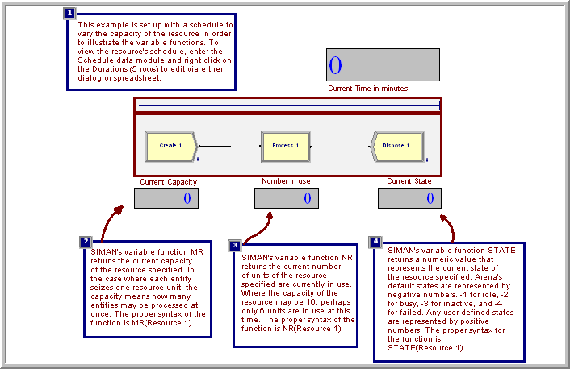
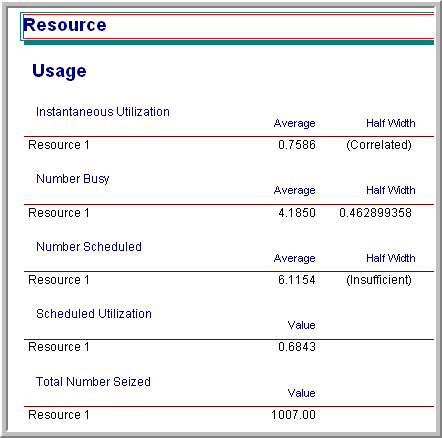
6.2.2 Calculating Utilization
The calculation of instantaneous and scheduled utilization depends upon the two variables \(\mathit{NR}\) and \(\mathit{MR}\) for a resource. The instantaneous utilization is defined as the time weighted average of the ratio of these variables. Let \(\mathit{NR}(t)\) be the number of busy resource units at time \(t\). Then, the time average number of busy resources is:
\[\overline{\mathit{NR}} = \frac{1}{T}\int\limits_0^T \mathit{NR}(t) \mathrm{d}t\]
Let \(\mathit{MR}(t)\) be the number of scheduled resource units at time \(t\). Then, the time average number of scheduled resource units is:
\[\overline{\mathit{MR}} = \frac{1}{T}\int\limits_0^T \mathit{MR}(t) \mathrm{d}t\]
Now, we can define the instantaneous utilization at time \(t\) as:
\[IU(t) = \begin{cases} 0 & \mathit{NR}(t) = 0\\ 1 & \mathit{NR}(t) \geq \mathit{MR}(t)\\ \mathit{NR}(t)/\mathit{MR}(t) & \text{otherwise} \end{cases}\]
Thus, the time average instantaneous utilization is:
\[\overline{\mathit{IU}} = \frac{1}{T}\int\limits_0^T \mathit{IU}(t)\mathrm{d}t\]
The scheduled utilization is the time average number of busy resources divided by the time average number scheduled. As can be seen in Equation 6.1, this is the same as the total time spent busy divided by the total time available for all resource units.
\[ \overline{\mathit{SU}} = \frac{\overline{\mathit{NR}}}{\overline{\mathit{MR}}} = \frac{\frac{1}{T}\int\limits_0^T \mathit{NR}(t)dt}{\frac{1}{T}\int\limits_0^T \mathit{MR}(t)dt} = \frac{\int\limits_0^T \mathit{NR}(t)dt}{\int\limits_0^T \mathit{MR}(t)dt} \tag{6.1}\]
If \(\mathit{MR}(t)\) is constant, then \(\overline{\mathit{IU}} = \overline{\mathit{SU}}\). The function, RESUTIL(Resource ID) returns \(\mathit{IU}(t)\). Caution should be used in interpreting \(\overline{\mathit{IU}}\) when \(\mathit{MR}(t)\) varies with time.
Now let’s return to the example of the professor holding office hours. Let’s suppose that the ignore option is used and consider case 2 and the 45 minute question. Let’s also assume for simplicity that the professor had a take home exam due the next day and was therefore busy all day long. What would be the average instantaneous utilization and the scheduled utilization of the professor? Table 6.4 illustrates the calculations.
| Time interval | Busy time | Scheduled time | \(\mathit{NR}(t)\) | \(\mathit{MR}(t)\) | \(\mathit{IU}(t)\) |
|---|---|---|---|---|---|
| 8 am - noon | 240 | 240 | 1.0 | 1.0 | 1.0 |
| 12 - 12:30 pm | 30 | 0 | 1.0 | 0 | 1.0 |
| 12:30 - 4 pm | 210 | 210 | 1.0 | 1.0 | 1.0 |
| 480 | 450 |
From Table 6.4 we can compute \(\overline{\mathit{NR}}\) and \(\overline{\mathit{MR}}\) as:
\[\begin{aligned} \overline{\mathit{NR}} & = \frac{1}{480}\int\limits_{0}^{480} 1.0 \mathrm{d}t = \frac{480}{480} = 1.0 \\ \overline{\mathit{MR}} & = \frac{1}{480}\int\limits_{0}^{480} \mathit{MR(t)} \mathrm{d}t = \frac{1}{480}\biggl\lbrace\int\limits_{0}^{240} 1.0 \mathrm{d}t + \int\limits_{270}^{480} 1.0 \mathrm{d}t \biggr\rbrace = 450/480 = 0.9375\\ \overline{\mathit{IU}} & = \frac{1}{480}\int\limits_{0}^{480} 1.0 \mathrm{d}t = \frac{480}{480} = 1.0\\ \overline{\mathit{SU}} & = \frac{\overline{\mathit{NR}}}{\overline{\mathit{MR}}} = \frac{1.0}{0.9375} = 1.0\bar{6}\end{aligned}\]
Table 6.4 indicates that \(\overline{IU}\) = 1.0 (or 100%) and \(\overline{SU}\) = 1.06 (or 106%). Who says that professors don’t give their all! Thus, with scheduled utilization, a schedule can result in the resource having its scheduled utilization higher than 100%. There is nothing wrong with this result, and if it is the case that the resource is busy for more time than it is scheduled, you would definitely want to know.
The help system has an excellent discussion of how it calculates instantaneous and scheduled utilization (as well as what they mean) in its help files, see Figure 6.10. The interested read should search under, resource statistics: Instantaneous Utilization Vs. Scheduled utilization.
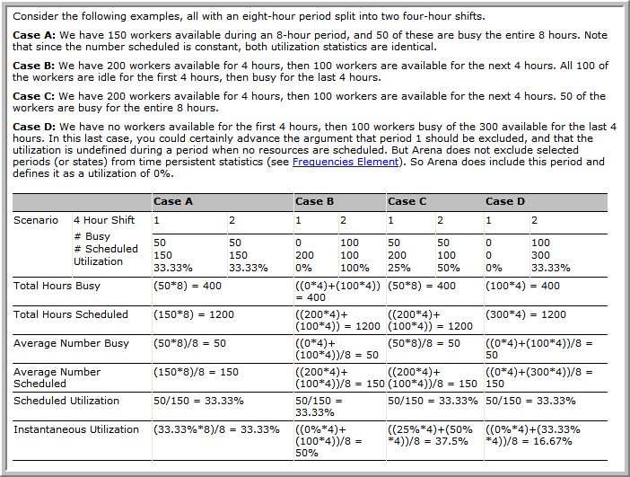
6.2.3 Resource Failure Modeling
As mentioned, a resource has 4 states that it can be in: idle, busy, inactive, and failed. The SCHEDULE module is used to model planned capacity changes. The FAILURES module is used to model unplanned or random capacity changes that place the resource in the failed state. The failed state represents the situation of a breakdown for the entire resource. When a failure occurs for a resource, all units of the resource become unavailable and the resource is placed in the failed state. For example, imagine standing in line at a bank with 3 tellers. For some reason, the computer system goes down and all tellers are thus unable to perform work. This situation is modeled with the FAILURES module of the Advanced Process panel. A more common application of failure modeling occurs in manufacturing settings to model the failure and repair of production equipment.
There are two ways in which a failure can be initiated for a resource: time based and usage (count) based. The concept of time based failures is illustrated in Figure 6.11. Notice the similarity to scheduled capacity changes. You can think of this situation as a failure “clock" ticking. The up-time delay is governed by the time to failure distribution and the downtime delay is governed by the time to repair distribution. When the time of failure occurs, the resource is placed in the failed state. If the resource has busy units, then the rules for capacity change (ignore, wait, and preempt) are invoked.
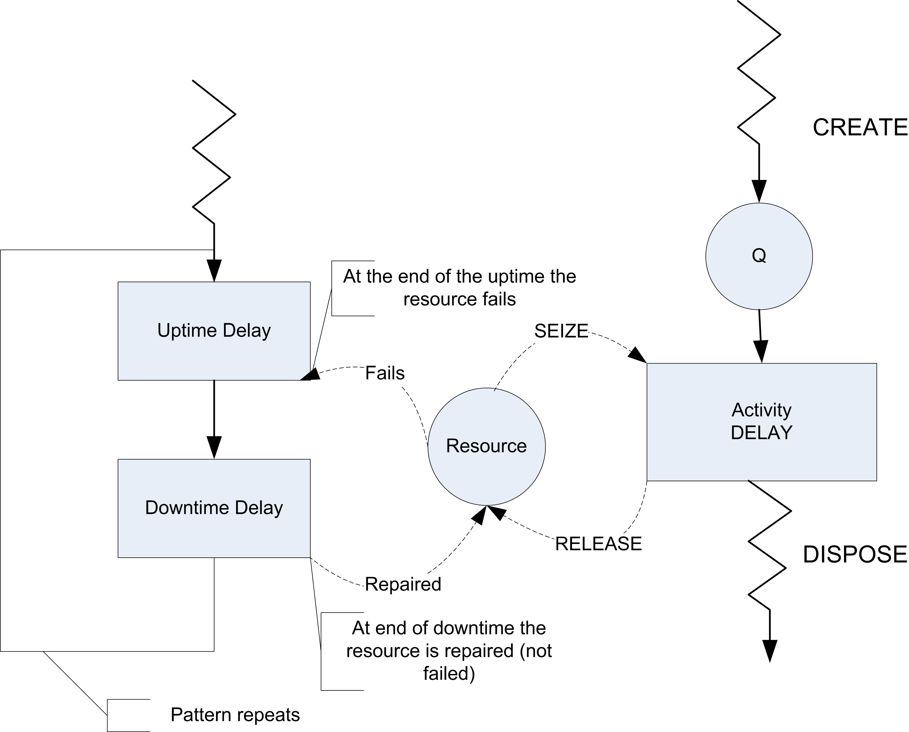
Usage based failures occur after the resource has been released. Each time the resource is released a count is incremented, when it reaches the specified number until failure value, the resource fails. Again, if the resource has busy units the capacity change rules are invoked. A resource can have multiple failures (both time and count based) defined to govern its behavior. In the case of multiple failures that occur before the repair, the failures queue up and cause the repair times to be acted on consecutively.
Figure 6.12 and Figure 6.13 illustrate how to define count based and time based failures within the FAILURES module.
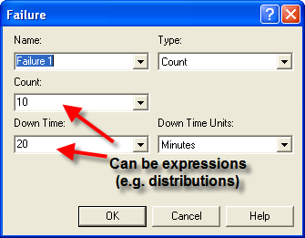
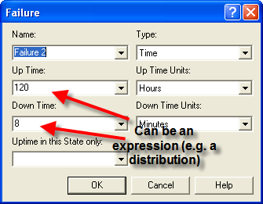
In both cases, the up-time, downtime, or count fields can all be expressions. In the case of the time based failure (Figure 6.13) the field up-time in this State only requires special mention. A time based failure defines a failure event that is scheduled to occur when the failure occurs. After the failure is repaired, the event is re-scheduled and the time to failure starts again. The up-time in this state field forms the basis for the time to failure. If nothing is specified, then simulation clock time is used as the basis. However, you can specify a state (from a STATESET or auto state (Idle, Busy, etc)) to use as the basis for accumulating the time until failure. The most common situation is to choose the Busy state. In this fashion, the resource only accumulates time until failure during its busy time. Figure 6.14 and Figure 6.15 illustrate how to attach the failures to resources.
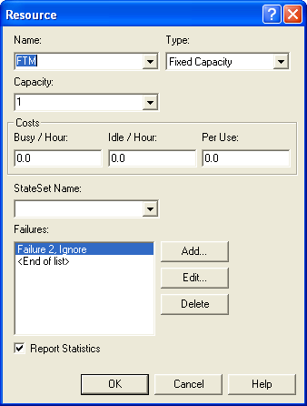
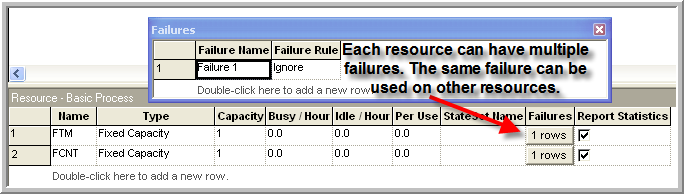
Notice that in the case of Figure 6.15}, you can clearly see that a resource can have multiple failures. In addition, the same failure can be attached to different resources. These figures are all based on the file, Smarts112-TimeAndCountFailures.doe, which accompanies this chapter. In this file, resource animation is used to indicate that the resource is in the failed state. You are encouraged to run the model. You might also look at the Smarts123.doe file for other ideas about displaying failures.
The next section illustrates how to use resource scheduled capacity changes to effectively model a system with non-stationary arrivals.
6.3 Job Fair Example with Non-Stationary Arrivals
In Chapter 3, we modeled a STEM Career Fair Mixer and illustrated some of the basic modeling techniques associated with process modeling. For example, we saw how to generate entities (students) and have them experience simple processes before leaving the system. In Chapter 4, we embellished the STEM Mixer model by more realistically modeling the closing of the mixer and illustrated how to route entities within a system. In this section, we return to the STEM Career Fair Mixer model in order to illustrate the modeling of non-stationary arrivals and the collection of statistics for such situations. We will first update the system description to reflect the new situation and then discuss the building and analysis of the new model. In this new modeling situation, we will see how to utilize the SCHEDULE module for the case of varying the mean arrival rate and varying the resource capacity.
Example 6.1 (Non-Stationary STEM Fair Mixer) Suppose new data on the arrival behavior of the students have become available. Over the course of the 6 hours that the mixer is open, the new data indicates that, while on average, the arrival rate is still 30 per hour, the rate varies significantly by the time of day. Let’s assume that the Mixer opens at 2 pm and lasts until 8 pm. Data was collected over 30 minute intervals during the 6 hours of the mixer and it showed that there was a larger arrival rate during the middle hours of the operating hours than during the beginning or ending hours of the data. The Table 6.5 summarizes the arrival rate for each 30 minute period throughout the 6 hour period.
| Period | Time Frame | Duration | Mean Arrival Rate per Hour |
|---|---|---|---|
| 1 | 2 - 2:30 pm | 30 | 5 |
| 2 | 2:30 – 3 pm | 30 | 10 |
| 3 | 3 - 3:30 pm | 30 | 15 |
| 4 | 3:30 – 4 pm | 30 | 25 |
| 5 | 4 - 4:30 pm | 30 | 40 |
| 6 | 4:30 – 4 pm | 30 | 50 |
| 7 | 5 - 5:30 pm | 30 | 55 |
| 8 | 5:30 – 6 pm | 30 | 60 |
| 9 | 6 - 6:30 pm | 30 | 60 |
| 10 | 6:30 – 7 pm | 30 | 30 |
| 11 | 7 - 7:30 pm | 30 | 5 |
| 12 | 7:30 – 8 pm | 30 | 5 |
Because of the time varying nature of the arrival of students, the STEM mixer organizers have noticed that during the peak period of the arrivals there are substantially longer lines of students waiting to speak to a recruiter and often there are not enough tables within the conversation area for students. Thus, the mixer organizers would like to advise the recruiters as to how to staff their recruiting stations during the event. As part of the analysis, they want to ensure that 90 percent of the students experience an average system time of 35 minutes or less during the 4:30-6:30 pm time frame. They would also like to measure the average number of students waiting for recruiters during this time frame as well as the average number of busy recruiters at the MalWart and JHBunt recruiting stations. You should first perform an analysis based on the current staffing recommendations from the previous modeling and then compare those results to a staffing plan that allows the recruiters to change their assigned number of recruiters by hour. Everything else about the operation of the system remains the same as described in Chapter 4.
The solution to this modeling situation will put into practice the concepts introduced in the last two sections involving arrival schedules and resource schedules. That aspect of the modeling will turn out to be relatively straightforward. However, the requirement to collect statistics over the peak attendance period from 4:30 – 6:30 pm will require some new concepts on how to collect statistics by time periods.
6.3.1 Collecting Statistics by Time Periods
For some modeling situations, we need to be able to collect statistics during specific intervals of time. To be able to do this, we need to be able to observe what happens during those intervals. In general, to collect statistics during a particular interval of time will require the scheduling of events to observe the system (and its statistics) at the start of the period and then again at the end of the period in order to record what happened during the period. Let’s define some variables to clarify the concepts. We will start with a discussion of collecting statistics for tally-based data.
Let \(\left( x_{1},\ x_{2},x_{3},\cdots{,x}_{n(t)} \right)\) be a sequence of observations up to and including time \(t\).
Let \(n(t)\) be the number of observations up to and including time \(t\).
Let \(s\left( t \right)\) be the cumulative sum of the observations up to and including time \(t\). That is,
\[s\left( t \right) = \sum_{i = 1}^{n(t)}x_{i}\]
Let \(\overline{x}\left( t \right)\) be the cumulative average of the observations up to and including time \(t\). That is,
\[\overline{x}\left( t \right) = \frac{1}{n(t)}\sum_{i = 1}^{n(t)}x_{i} = \frac{s\left( t \right)}{n(t)}\]
We should note that we have \(s\left( t \right) = \overline{x}\left( t \right) \times n(t)\). Let \(t_{b}\) be the time at the beginning of a period (interval) of interest and let \(t_{e}\) be the time at the end of a period (interval) of interest such that \(t_{b} \leq t_{e}\). Define \(s(t_{b},t_{e}\rbrack\) as the sum of the observations during the interval, \((t_{b},t_{e}\rbrack\). Clearly, we have that,
\[s\left( t_{b},t_{e} \right\rbrack = s\left( t_{e} \right) - s\left( t_{b} \right)\]
Define \(n(t_{b},t_{e}\rbrack\) as the count of the observations during the interval, \((t_{b},t_{e}\rbrack\). Clearly, we have that,
\[n\left( t_{b},t_{e} \right\rbrack = n\left( t_{e} \right) - n\left( t_{b} \right)\]
Finally, we have that the average during the interval, \((t_{b},t_{e}\rbrack\) as
\[\overline{x}\left( t_{b},t_{e} \right\rbrack = \frac{s\left( t_{b},t_{e} \right\rbrack}{n\left( t_{b},t_{e} \right\rbrack}\]
Thus, if during the simulation we can observe, \(s\left( t_{b},t_{e} \right\rbrack\) and \(n\left( t_{b},t_{e} \right\rbrack\), we can compute the average during a specific time interval. To do this in a simulation, we can schedule an event for time, \(t_{b}\), and observe, \(s\left( t_{b} \right)\) and \(n\left( t_{b} \right)\). Then, we can schedule an event for time, \(t_{e}\), and observe, \(s\left( t_{e} \right)\) and \(n\left( t_{e} \right)\). Once these values are captured, we can compute \(\overline{x}\left( t_{b},t_{e} \right\rbrack\). If we observe this quantity across multiple replications, we will have the average that occurs during the defined period.
So far, the discussion has been about tally-based data. The process is essentially the same for time-persistent data. Recall that a time-persistent variable typically takes on the form of a step function. For example, let \(y(t)\) represents the value of some state variable at any time \(t\). Here \(y(t)\) will take on constant values during intervals of time corresponding to when the state variable changes, for example. \(y(t)\) = {0, 1, 2, 3, …}. \(y(t)\) is a curve (a step function in this particular case) and we compute the time average over the interval \((t_{b},t_{e}\rbrack\).as follows.
\[\overline{y}\left( t_{b},t_{e} \right) = \frac{\int_{t_{b}}^{t_{e}}{y\left( t \right)\text{dt}}}{t_{e} - t_{b}}\]
Similar to the tally-based case, we can define the following notation. Let \(a\left( t \right)\) be the cumulative area under the state variable curve.
\[a\left( t \right) = \int_{0}^{t}{y\left( t \right)\text{dt}}\]
Define \(\overline{y}(t)\) as the cumulative average up to and including time \(t\), such that:
\[\overline{y}\left( t \right) = \frac{\int_{0}^{t}{y\left( t \right)\text{dt}}}{t} = \frac{a\left( t \right)}{t}\]
Thus, \(a\left( t \right) = t \times \overline{y}\left( t \right)\). So, if we have a function to compute \(\overline{y}\left( t \right)\) we have the ability to compute,
\[\overline{y}\left( t_{b},t_{e} \right) = \frac{\int_{t_{b}}^{t_{e}}{y\left( t \right)\text{dt}}}{t_{e} - t_{b}} = \frac{a\left( t_{e} \right) - a\left( t_{b} \right)}{t_{e} - t_{b}}\]
Again, a strategy of scheduling events for \(t_{b}\) and \(t_{e}\) can allow you to observe the required quantities at the beginning and end of the period and then observe the desired average.
The key to collecting the statistics on observation-based over an interval of time within Arena is the usage of the TAVG(tally ID) and the TNUM(tally ID) functions within Arena. The tally ID is the name of the corresponding tally variable, typically defined within the RECORD module or when defining a Tally set. Using the previously defined notation, we can note the following: TAVG(tally ID) = \(\overline{x}\left( t \right)\) and TNUM(tally ID) = \(n(t)\). Thus, we can compute s(t) for some tally variable via:
\(s(t)\)=TAVG(tally ID)*TNUM(tally ID)
Given that we have the ability to observe \(n(t)\) and \(s(t)\) via these functions, we have the ability to collect the period statistics for any interval.
To make this more concrete, let’s collect statistics for every hour of the day for an 8-hour simulation. In what follows, we will outline via pseudo-code how to implement this situation. Suppose we are interested in collecting the average time customers spend in a queue for a simple single server queueing system (e.g. a M/M/1 queue) for each hour of an 8 hour day. Let’s call the queue, ServerQ and define a tally variable called QTimeTally that collects the average time in the queue.
The first step is to define a clock entity that can keep track of each hour of the day. We will use the clock entity to schedule the events and record the desired statistics for each period. The clock entity will loop after delaying for the period length and increment the period indicator. At the end of the period, we will tabulate \(n(t)\) and \(s(t)\) using TAVG() and TNUM(), compute the average during the period and then prepare for the next hour by saving the cumulative statistics.
First, we define the variables, attributes and sets that we are going to use.
VARIABLES:
// to keep track of the current hour, the 0th hour is the 1st period
vPeriod
Attributes:
mySum// the cumulative sum at the beginning of the period
myNum // the cumulative number at the beginning of the period
myPeriodSum // the sum during the period
myPeriodNum // the count during the period
myPeriodAvg // the average computed within the period
Sets:
WaitTimeTallySet as a tally set with 8 elements, 1 for each period
(hour) of the dayThen, the pseudo-code for the clock-entity operation is as follows:
CREATE 1 entity at time 0.0
A: ASSIGN vPeriod = vPeriod + 1
mySum = 0.0
myNum = 0
DELAY for 1 hour
BEGIN ASSIGN
// collect the cumulative sum and count
myPeriodSum = TAVG(QTimeTally)*TNUM(QTimeTally) - mySum
myPeriodNum = TNUM(QTimeTally) - myNum
// save the current sum again for next period
mySum = TAVG(QTimeTally)*TNUM(QTimeTally)
myNum = TNUM(QTimeTally)
END ASSIGN
DECIDE IF myPeriodNum > 0
RECORD (myPeriodSum/myPeriodNum) by Set: WaitTimeTallySet using index, vPeriod
END DECIDE
Go To: AIf there are multiple performance measures that need collecting, then this kind of logic can be repeated. In addition, by using sets, arrays, or arrayed expressions, you could define many variables and loop through all that are necessary to compute many performance measures for the periods. This can become quite tedious for a large number of performance measures. Also, note that the above logic assumes that we are simulating the system of interest for 8 hours, such that the replication length is set at 8 hours and the simulation will stop at that time. If you are collecting statistics for periods of time that do not span the entire simulation run length, then you need to provide additional logic for the clock-entity so that you ensure valid collection intervals.
Finally, to compute the time-persistent averages within Arena we can proceed in a very similar fashion as previously described by using the DAVG(Dstat ID) function. The DAVG(Dstat ID) function is \(\overline{y}\left( t \right)\) the cumulative average of a time-persistent variable. Thus, we can easily compute \(a\left( t \right) = t \times \overline{y}\left( t \right)\) via DAVG(Dstat ID)*TNOW. Therefore, we can use the same strategy as noted in the illustrative pseudo-code to compute the time average over a given period of time, \(\overline{y}\left( t_{b},t_{e} \right).\)
Fortunately, Arena has a method to automate this approach within the STATISTIC module on the Advanced Process Panel. Within the module you can define a time-persistent statistic and then provide a pattern for collecting the average over user defined periods. The Smarts file, “Statistics Capturing Variable Metric over a specified Time Period.doe” illustrates the use of this option. In the dialog shown here, the variable, vMoney_in_the_Bank, is observed starting at time 3 hours after the simulation starts, with an observation period of 3 hours. In addition, the observation is repeated every 8 hours. That is, after an 8-hour period, we start the observation period of 3 hours again. For additional details, the interested reader should refer to the Arena Help on these options, which will provide more of the technical details of the meaning of the various options. We will illustrate the use of this functionality when developing the updated STEM Mixer model.
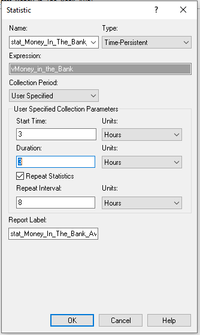
6.3.2 Modeling the Statistical Collection
Now that we have a better understanding of the statistical collection requirements for the revised STEM mixer situation, we can build the model. First, we will outline the collection of the statistics during the peak period using the concepts from the last section. Then, we will implement the model using Arena.
The pseudo-code for this situation is actually simpler than illustrated in the last section because we only have to collect statistics during the peak period and it occurs only once during the 6 hour operating horizon. In what follows, we will collect both the system time and the average number of students waiting for a recruiter during the peak period. We will also see how to collect the average number waiting during the peak period using Arena’s STATISTIC module.
Define the following additional variables, attributes, and statistics to add to the existing STEM Mixer model of Chapter 4.
VARIABLES:
// time that the period starts, e. g. 4:30
vTimeOfPeriodStart = 150 minutes
// the length of the peak period
vPeakPeriodLength = 120 minutes
ATTRIBUTES:
// cumulative sum for system time at the beginning of the peak period
myCumSumSysTime
// cumulative number of system time observations at the beginning of the peak period
myCumNumSysTime
// cumulative area of the number of students waiting at the beginning of the peak period
myCumAreaWaitingStudents
TALLIES:
Tally System Time
TIME PERSISTENT Statistics:
NumStudentsWaitingTP, NQ(MalMart) + NQ(JHBunt)
Now, we can outline the modeling to collect the statistics by period.
CREATE 1 entity at time vTimeOfPeriodStart
BEGIN ASSIGN
myCumSumSysTime = TAVG(Tally System Time)*TNUM(Tally System Time)
myCumNumSysTime = TNUM(Tally System Time)
myCumAreaWaitingStudents = DSTAT(NumStudentsWaitingTP)*TNOW
END ASSIGN
DELAY vPeakPeriodLength minutes
BEGIN ASSIGN
myPeriodSum = TAVG(Tally System Time)*TNUM(Tally System Time) - myCumSumSysTime
myPeriodNum = TNUM(Tally System Time) - myCumNumSysTime
myPeriodArea = DSTAT(NumStudentsWaitingTP)*TNOW - myCumAreaWaitingStudents
END ASSIGN
DECIDE IF myPeriodNum > 0
RECORD (myPeriodSum/myPeriodNum) as SystemTimeDuringPeriod
END DECIDE
RECORD (myPeriodArea/vPeakPeriodLength) as TimeAvgNumWaitingDuringPeriod
DISPOSENotice that within this pseudo-code, we only have the two events (one at the beginning and one at the end) of the delay representing the observation period in which to capture the statistics. Before the period delay, we capture the statistics at the beginning of the period. Then, after the period, we can compute what happened during the period and then record the statistics for the period. Also notice the use of variables to represent the peak period length and when the period starts. This allows these variables to be changed more easily if you decide to experiment with the parameter settings.
6.3.3 Implementing the Model in Arena
Now we are ready to implement the changes to the model developed in Chapter 4 Section 4.1. There are really just two major changes to make 1) implementing the non-stationary arrivals and 2) implementing the statistical collection for the peak period. To start, we need to take the mean arrival rate information found in Example 6.1 and define a schedule for the arrival of students to the mixer.
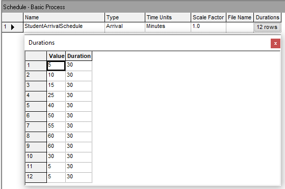
Figure 6.17 shows the Arena arrival schedule data sheet view. Because the time units are set to minutes, the (value, duration) pairs are entered with the duration values as 30 minutes. Also, because the arrival rate data is already per hour, we can simply enter the mean arrival rates. If the provide mean arrival rate data was not per hour, then we would have needed to convert them to a per hour basis before entering them into the arrival schedule. Next, the arrival schedule must be connected to the CREATE module used to create the student entities.
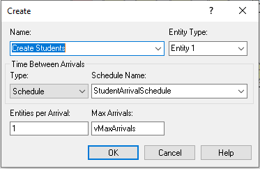
Figure 6.18 illustrates the updated CREATE module. Notice that the type of arrival has been designated as Schedule and the name of the schedule from Figure 6.17 has been supplied. As discussed in Chapter 4, we still turn off the CREATE module by setting vMaxArrivals to 0 by using an entity scheduled to occur at the end of the mixer. However, because we used an arrivals schedule we could also have specified one extra interval in the arrival schedule with the (rate, duration) pair as (0, ). A blank duration is interpreted as infinity. Thus, rate would be set the mean arrival rate to 0 when that interval occurs and it would remain at 0 for the remainder of the simulation. This would effectively shut off the CREATE module.
Now we will implement the pseudo-code of the last section within Arena. An overview of the Arena flow chart modules can be found in Figure 6.19.
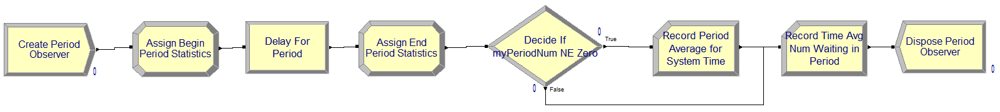
To implement this logic, we will first update the variables, attributes, and time persistent variables. Figure 6.20 and Figure 6.21 show the updated attributes and variables to be used in the revised model. The variables and attribute names match what was presented in the pseudo-code.
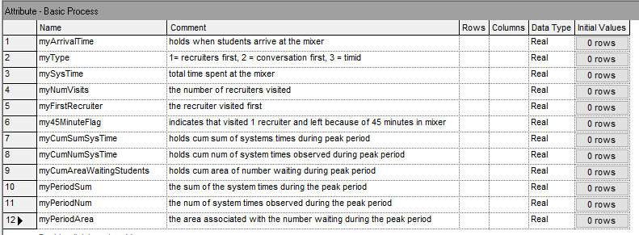
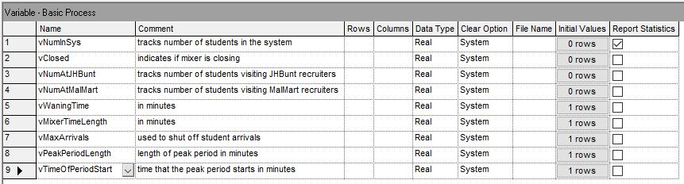
Figure 6.22 illustrates the updated definition of additional time persistent variables to collect statistics during various time periods. The two definitions on rows 2 and 3 collect the same performance measure, the average number of students waiting for either recruiter during the peak period. The definition on row 2 is used within the implementation of the previously discussed pseudo-code. The definition on row 3 will use Arena’s enhance statistical collect by period functionality to start the collection at time 150 and last for 120 minutes. We will see that the results of both methods for collecting this performance measure will match exactly.
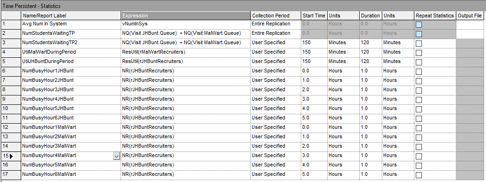
Then, there are additional time-persistent performance measures defined for the peak period and for the collection of hourly statistics. Rows 4 and 5 of Figure 6.22 collect the utilization of the resources used to model the JHBunt and MalMart recruiters using the ResUtil() function. This will allow us to note the utilization during the peak period. Then, rows 6 through 17 simply collect the average number of busy units of resource for JHBunt and MalMart for each hour of operation of the mixer. These statistics will facilitate determining how many recruiters to staff during each hour of operation.
To implement the modules found in Figure 6.19, we need to use CREATE, ASSIGN, DELAY, DECIDE, and RECORD modules that follow the previously described pseudo-code. Figure 6.23 shows the creating of the logical entity to collect statistics for the peak period.
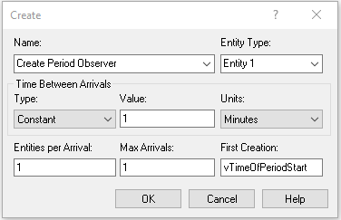
Figure 6.24 shows the ASSIGN modules used to capture the statistics at the beginning and end of the period. Notice the use of the TAVG(), TNUM(), and DAVG() functions as discussed in the pseudo-code.
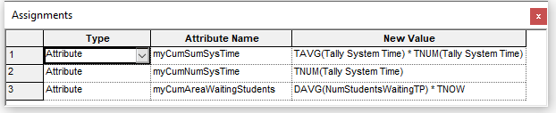
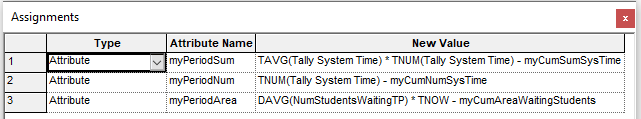
Figure 6.25 illustrates the use of a DECIDE module to check if there were no observations during the peak period in order to avoid a divide by zero error when computing the system time for the peak period.
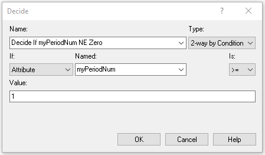
Figure 6.26 and Figure 6.27 present the RECORD modules for capturing the peak period system time and average number of students waiting for either recruiter.
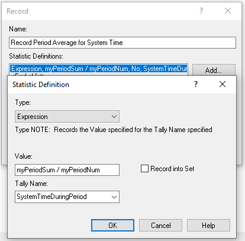
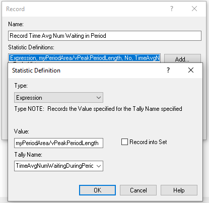
The entire Arena model is found in the file STEM_MixerArrivalsScheduleOnly.doe. This implementation has not yet considered the resource schedule constructs that were previously discussed. We will run this model and review the statistics to understand how to set up the resource capacity change. The base case scenario that we will perform is to run the model using the previously specified capacity of 3 units for JHBunt and 2 units for MalMart. We will see how the non-stationary arrivals affect the performance of the system.
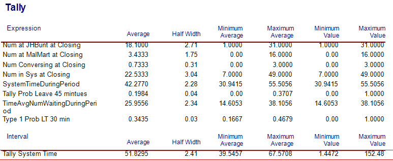
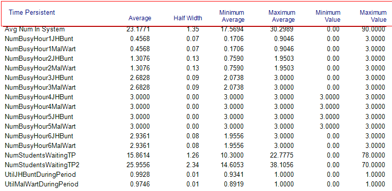
Examining Figure 6.28, the first thing to note is that the overall system time for the students has increased to about 52 minutes versus the 27.6 minutes in Chapter 4. Clearly, the non-stationary arrival behavior of the students has a significant affect on the system and should be accounted for within the modeling. By looking at Figure 6.29, the reason for the increase in system time becomes clear. The utilization of the recruiting stations is nearly 100 percent (99% and 97%) during the peak period. Utilization this high will cause a significant line that will take some time to be worked down as the arrival rate eventually decreases. This can be better noted by reviewing the average number of busy units by hour of operation within Figure 6.29. Clearly, hours 4, 5, and 6 all have the reported average number busy very near or at the capacity limit of the resources. This indicates that we should increase the capacity during those time periods. Finally, please note the value of the statistic, TimeAvgNumWaitingDuringPeriod on Figure 6.28 of 25.9556. In addition, note on Figure 6.29, the value of time-persistent statistic, NumStudentsWaitingTP2, as also 25.9556. We see that the two methods of capturing this statistic via the by hand method and by enhanced functionality for period based collection of time-persistent statistics resulted in exactly the same estimates. Now you can better understand what Arena is doing to collect period based statistics.
A easy way to further analyze this situation is to set the capacity of the resources to infinity and review the estimated number of busy resources by hour of the day. Then, we can specify a capacity by hour that results in a desired utilization for each hour of the day.
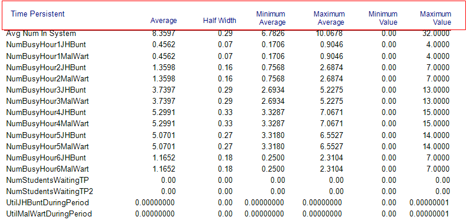
Figure 6.30 shows the result of running the non-stationary arrival schedule with infinite capacity for the recruiting resources. Notice how the estimated number busy units for the resources track the arrival pattern. Now considering the JHBunt recruiting station during the fourth hour of the day, we see an average number of recruiters busy of 5.2991. Thus, if we set the resource capacity of the JHBunt recruiting station to 6 recruiters during the fourth hour of the day, we would expect to achieve a utilization of about 88%, (\(5.2991/6 = 0.8832\)). With this thinking in mind we can determine the capacity for each hour of the day and the expected utilization.
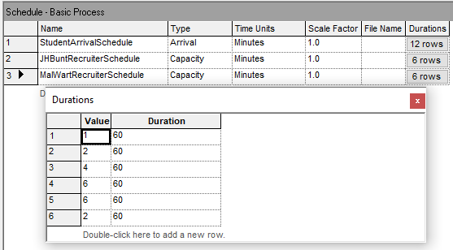
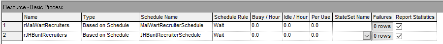
Figure 6.31 illustrates a possible resource capacity change schedule for the MalMart recruiting station. For simplicity the same schedule will be used for the JHBunt recruiting station. The Arena file for this change can be found in the chapter files as STEM_MixerBothSchedules.doe. Figure 6.32 illustrates how to connect the defined resource schedule to the resource module so that the resource uses the schedule during the simulation. Figure 6.33 and Figure 6.34 present the results when using the resource schedule defined in Figure 6.31.
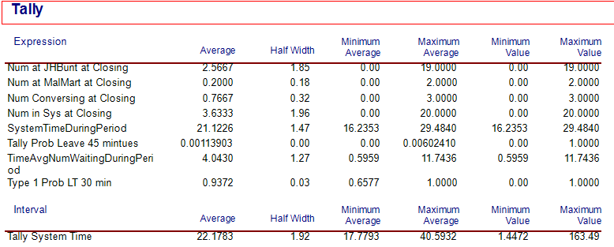
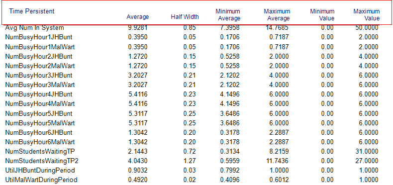
The first thing to notice is in Figure 6.33 the substantial drop in overall system time from the near 52 minutes down to about 22 minutes. Also, from Figure 6.34, we see that the utilization of the JHBunt recruiting station is still a bit high (90%) during the peak arrival period. Thus, it may be worth exploring the addition of an additional recruiter during hour 5. We leave the further exploration of this model to the interested reader.
Non-stationary arrival patterns are a fact of life in many systems that handle people. The natural daily processes of waking up, working, etc. all contribute to processes that depend on time. This section illustrated how to model non-stationary arrival processes and illustrated some of the concepts necessary when developing staffing plans for such systems. Incorporating these modeling issues into your simulation models allows for more realistic analysis; however, this also necessitates much more complex statistical analysis of the input distributions and requires careful capture of meaningful statistics. Capturing statistics by time periods is especially important because the statistical results that do not account for the time varying nature of the performance measures may mask what may be actually happening within the model. The overall average across the entire simulation time horizon may be significantly different than what occurs during individual periods of time that correspond to non-stationary situations. A good design must reflect these variations due to time.
In the next section, we continue the exploration of advanced process modeling techniques by illustrating how to model the balking and reneging of entities within queues.
6.4 Modeling Balking and Reneging
This situation has multiple types of customers with different priorities, different service times, and in the case of one type of customer, the desire (or ability) to renege from the system. You can find the completed model file for this section in the chapter files under the name, ClinicExample.doe.
Example 6.2 (Walk-in health care clinic) A walk-in care clinic has analyzed their operations and they have found that they can classify their walk-in patients into three categories: high priority (urgent need of medical attention), medium priority (need standard medical attention), and low priority (non-urgent need of medical attention). On a typical day during the period of interest there are about 15 arrivals per hour with (25% being high priority, 60% being medium priority, and the remaining being low priority). The clinic is interested in understanding the waiting time for patients at the clinic. Upon arrival to the clinic the patients are triaged by a nurse into one of the three types of patients. This takes only 2-3 minutes uniformly distributed. Then, the patients wait in the waiting room based on their priority. Patients with higher priority are placed at the front of the line. Patients with the same priority are ordered based on a first-come first served basis. The service time distributions of the customers are given as follows.
| Priority | Service Time Distribution (in minutes) |
|---|---|
| High | Lognormal(38, 8) |
| Medium | Triangular(16, 22, 28) |
| Low | Lognormal(12, 2) |
The clinic has 4 doctors on staff to attend to the patients during the period of interest. They have found through a survey that if there are more than 10 people waiting for service an arriving low priority patient will exit before being triaged. Finally, they have found that the non-urgent (low priority) patients may depart if they have to wait longer than \(15 \pm 5\) minutes after triage. That is, a non-urgent patient may enter the clinic and begin waiting for a doctor, but if they have to wait more than \(15 \pm 5\) minutes (uniformly distributed) they will decide to renege and leave the clinic without getting service. The clinic would like to estimate the following:
the average system time of each type of patient
the probability that low priority patients balk
the probability that low priority patients renege
the distribution of the number of customers waiting in the doctor queue
Solution to Example 6.2
For this problem, the system is the walk-in clinic, which includes doctors and a triage nurse who serve three types of patients. The system must know how the patients arrive (time between arrival distribution), how to determine the type of the patient, the triage time, the service time by type of patient, and the amount of time that a low priority patient is willing to wait.
To determine the type of the patient, a discrete distribution (DISC) can be used. The service time distributions depend on the patient type and can be easily held in an arrayed EXPRESSION. In fact, this information can be held in expressions as illustrated in Figure 6.35. In the DISC() distribution, 1 equals high priority, 2 equals medium priority, and 3 equals low priority. In addition, the system must know the balk criteria for the low priority patients. This information is modeled with variables as illustrated in Figure 6.36.
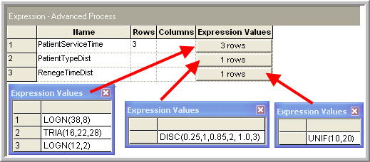
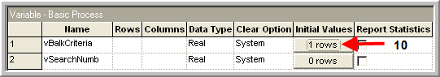
The entity for this model is the patient. Patients are created according to a particular type, enter the system and then depart. Thus, a key attribute for patients should be their type. In addition, the required performance measures require that the arrival time of the patient be stored so that the total time in the system can later be calculated. There are two resources for this system: triage nurse and doctors, with 1 and 4 units respectively.
The process flow for this system is straightforward, except for the reneging of low priority patients as illustrated in the following pseudo-code.
CREATE patients
ASSIGN myType = PatientTypeDist
DECIDE
IF (myType == 3) and (NQ(Doctor’s Q) >= vBalkCriteria)
RECORD balk
DISPOSE patient
ELSE
SEIZE 1 unit of triage nurse
DELAY for UNIF(2,3) minutes
RELEASE 1 unit of triage nurse
// handle reneging patients
SEIZE 1 unit of Doctors
DELAY for service based on patient type
RELEASE 1 unit of Doctors
RECORD patient’s system time
DISPOSE
ENDIF
END DECIDEIn the pseudo-code, the patient is created and then the type is assigned. If the type of patient is of low priority and the doctor’s queue has become to large, then the low priority patient balks. Otherwise, the patient is triaged by the nurse. After triage the patient will wait in the doctor’s queue until their renege time is up or they get served. After the doctor serves the patient statistics are recorded and the patient departs the system.
Modeling the reneging of the patients within requires additional effort. There are no magic dialog boxes or modules that directly handle reneging. The key to modeling the reneging is to remember how Arena processes entities. In particular, from your study in Chapter 2, you saw that no model logic is executed unless an entity is moving through the model. In addition, you know that an entity that is in a queue is no longer moving. Thus, an entity within a queue cannot remove itself from the queue! While this presents a difficulty, it also indicates the solution to the problem.
If the entity that represents the low priority patient cannot remove itself from the queue, then some other entity must do the removal. The only other entities in the system are other patients and it seems both unrealistic and illogical to have another patient remove the reneging patient. Thus, you can only conclude that another (logical) entity needs to be created to somehow implement the removal of the reneging patient.
As you have learned, there are two basic ways to create entities: the CREATE module and the SEPARATE module. Since there is no clear pattern associated with when the patient will renege, this leaves the SEPARATE module as the prime candidate for implementing reneging. Recall that the SEPARATE module works by essentially cloning the entity that goes through it in order to create the specified number of clones. Now the answer should be clear. The low priority patient should clone himself prior to entering the queue. The clone will be responsible for removing the cloned patient from the queue if the delay for service is too long.
Figure 6.37 illustrates the basic ideas for modeling reneging in the form of an activity diagram. Using a SEPARATE module, the patient entity can be duplicated prior to the entity entering the doctor’s queue. Now the two flows can be conceptualized as acting in parallel. The (original) patient enters the doctor queue. If it has to wait, it stops being the active entity, stops moving, and gives control back the event scheduler. At this point, the duplicate (clone) entity begins to move.
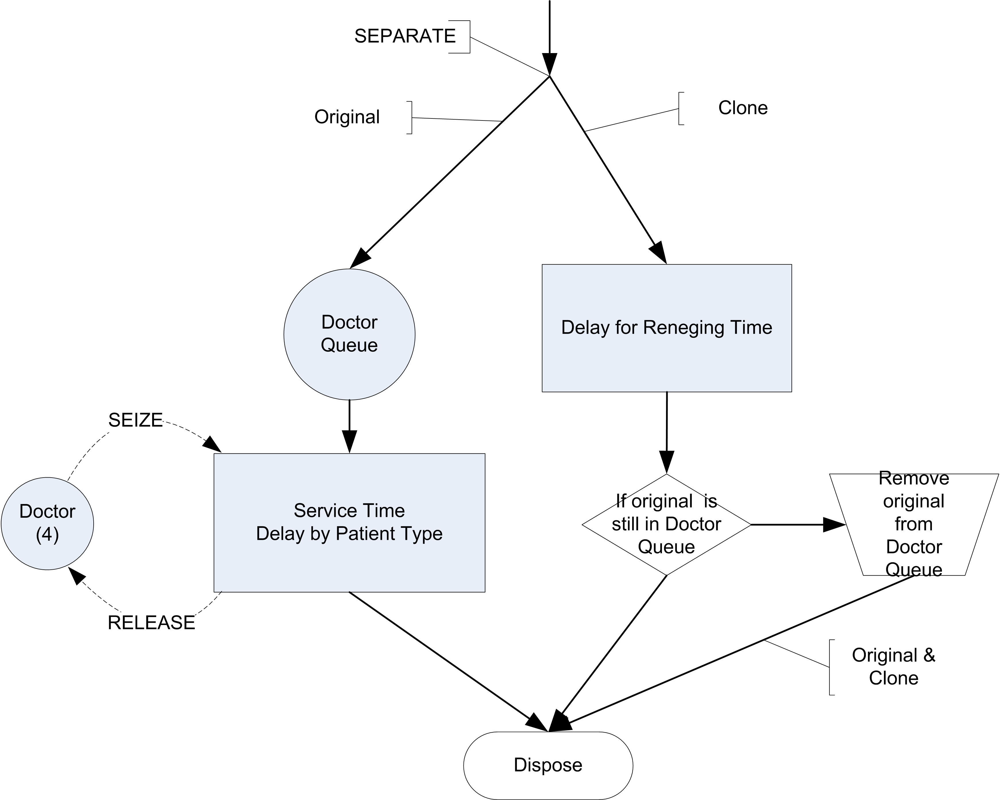
Within the simulation, no actual simulation time has advanced. That is, the clone moves at the same simulated time because it was put in the ready state before becoming the active entity. The now active clone then enters the delay module that represents the time until reneging. This schedules an event to represent this delay and the clone’s progress stops. The event scheduler then allows other entities to proceed through their process flows. One of those other entities might be the original patient entity. If the original entity continues its movement and gets out of the queue before the clone finishes its delay, then it will automatically be removed from the queue by the doctor resource and be processed. If the clone’s delay completes before the original exits the queue, then when the clone becomes the active entity, it will remove the original from the queue and proceed to being disposed. If the clone does not find the original in the queue, then the original must have proceeded and the clone can simply be disposed. One can think of this as the patient, setting an alarm clock (the event scheduled by the duplicate) for when to renege. To implement these ideas within you will need to use the SEPARATE, SEARCH, and REMOVE modules. Now, let’s take a look at the entire model within .
Figure 6.38 provides an overview of the walk-in clinic model that follows closely the previously discussed pseudo-code. The CREATE module has a time between arrival specified as Random(expo) with a mean of 6 minutes. The next ASSIGN module simply assigns the arrival time and the type of patient and then changes the Entity Type and Entity Picture based on some sets that have been defined for each type of patient. This is shown in Figure 6.39.
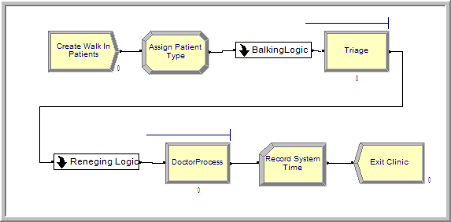
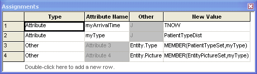
The Triage and Doctor PROCESS modules are done similarly to how you have implemented many of the prior models. In order to implement the priority for the patients by type, the QUEUE module can be used. In this case the myType attribute can be used with the lowest attribute value as shown in Figure 6.40. You should attempt to build this model or examine the supplied file for all the details.
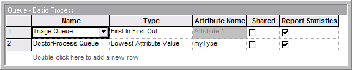
The balking and reneging logic have been placed inside two different sub-models. Balking only occurs for non-urgent patients, so the type of patient is first checked. If the patient is of type non-urgent, whether a balk will occur can be recorded with the expression, NQ(DoctorProcess.Queue) >= vBalkCriteria. This expression evaluates to 1 for true or 0 for false. Thus, the probability of balking can be estimated. The patients who actually balk are then disposed. This is illustrated in Figure 6.41.
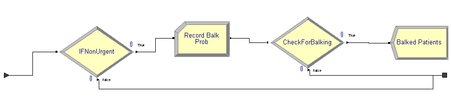
The reneging logic is more complicated. Figure 6.42 presents an overview of the sub-model logic for reneging.
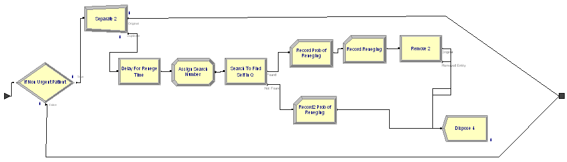
In the logic, the patient’s type is checked to see if the patient is of type non-urgent. If so, the entity is sent to a SEPARATE module. The original entity simply exits the sub-model (to proceed to the queue for the doctor resource). The duplicate then enters the DELAY module that schedules the time until reneging. After exiting the reneging delay, an ASSIGN module is used to set a variable (vSearchNumber) equal to Entity.SerialNumber. Recall that Entity.SerialNumber is a unique number given to each entity when created. When the original entity was duplicated by the SEPARATE module, the duplicate also has this same number assigned. Thus, you can use this number to have the clone search for the original entity within the queue. The SEARCH module allows the searching of a batch, queue, or expression for a particular expression.
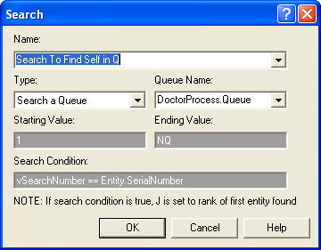
As illustrated in Figure 6.43, the DoctorProcess.Queue is searched starting at the first entity in the queue (rank 1) to last entity in queue(the entity at rank NQ). The search proceeds to find the first entity where vSearchNumber == Entity.SerialNumber. As the SEARCH module indicates, if the search condition is true the global variable, \(J\), is set to the rank of the first entity satisfying the condition. Thus, after the SEARCH module completes the variable, \(J\), can be used to see if an entity was found. An entity will have been found if \(J > 0\) and not found if \(J = 0\). The SEARCH module has two exit points: one for if the search found something, the other for the case of not finding something. If no entity was found, then the duplicate can simply be disposed because the original is no longer in the queue. If an entity was found then the variable, \(J\), can be used within the REMOVE module to remove the appropriate entity from the queue. The two RECORD modules on both paths after the SEARCH modules use the fact that the Boolean expression, \(J > 0\), will indicate whether or not there was a renege. This is can be observed as an expression in the RECORD modules to collect the probability of reneging as illustrated in Figure 6.44.
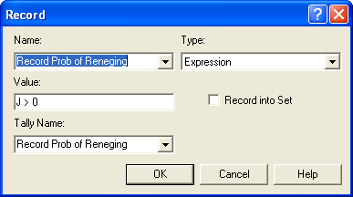
If \(J > 0\), then the entity at rank \(J\) can be removed from the DoctorProcess.Queueas illustrated in Figure 6.45. The rest of the model is relatively straightforward and you are encouraged to explore the final dialog boxes.
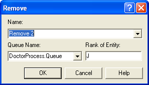
Assuming that the clinic opens at 8 am and closes at 6 pm, the simulation was set up for 30 replications to yield the results shown in Figure 6.46. It appears that there is a relatively high chance (about 29%) that a non-urgent patient will renege. This may or may not be acceptable in light of the other performance measures for the system. The reader is asked to further explore this model in the exercises, including the implementation to collect statistics on the number of customers waiting in the doctor queue.
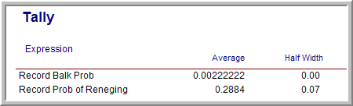
While some analytical work has been done for queuing systems involving balking and reneging, simulation allows for the modeling of more realistic types of queueing situations as well as even more complicated systems. In the next section, we introduce a very useful construct that enables condition based signaling and control of entity movement. When the entity waits for the condition, it waits in a queue. This permits a wider variety of modeling involving queues.
6.5 Holding and Signaling Entities
In this section we will explore the use of two new modules: HOLD and SIGNAL. The HOLD module allows entities to be held in a queue based on three different options: 1) wait for signal, 2) infinite hold, and 3) scan for condition. The SIGNAL module broadcasts a signal to any HOLD modules that are listening for the specified signal.
To understand the usage of the HOLD module, we must better understand the three possible options:
Wait for Signal – The wait for signal option holds the entities in a queue until a specific numerical value is broadcast via a SIGNAL module. The numerical value is specified via the Wait for Value field of the module. This field can be a constant, an expression (that evaluates to a number), or even an attribute of an entity. In the case of an attribute, each incoming entity can wait for a different numerical value. Thus, when entities waiting for a specific number are signaled with that number, they exit the HOLD module. The other entities stay in the queue.
Infinite Hold – The infinite hold option causes the entities to wait in the queue until they are physically removed (via a REMOVE module).
Scan for Condition – The scan for condition option holds the entities in the queue until a specific condition becomes true within the model. Every time an event occurs within the model, all of the scan for conditions are evaluated. If the condition is true, the waiting entities are permitted to leave the module immediately (at the current time). Since moving entities may cause conditions to change, the check of the condition is performed until no entities can move at the current time. As discussed in Chapter 2, this essentially allows entities to move from the waiting state into the ready state. Then the next event is executed. Because of the condition checking overhead, models that rely on scan for condition logic may execute more slowly.
In the wait for signal option, the entities wait in a single queue, even though the entities may be waiting on different signal values. The entities are held in the queue according to the queue discipline specified in the QUEUE module. In Figure 2.73 of Chapter 2, the entities are in the condition delayed state, waiting on the condition of particular signal. The default discipline of the queue is first in, first out. There can be many different HOLD modules that have entities listening for the same signal within a model. The SIGNAL is broadcast globally and any entities waiting on the signal are released and moved into the ready state. The order of release is essentially arbitrary if there is more than one HOLD module with entities waiting on the signal. If you need a precise ordering of release, then send all entities to another queue that has the desired ordering (and then release them again), or use a HOLD/REMOVE combination instead.
The infinite hold option places the entities in the dormant state discussed in Chapter 2. The entities will remain in the queue of the HOLD module until they are removed by the active entity via a REMOVE or PICKUP module. An example of this is presented in Section 6.6.3.
The scan for condition option is similar in some respects to the wait for signal option. In the scan for condition option, the entities are held in the queue (in the condition delayed state) until a specific condition becomes true. However, rather than another entity being required to signal the waiting entities, the simulation engine notifies waiting entities if the condition become true. This eases the burden on the modeler but causes more computational time during the simulation. In almost all instances, a HOLD with a scan for condition option can be implemented with a HOLD and a wait for signal option by carefully thinking about when the desired condition will change and using an entity to send a signal at that time.
In my opinion, modelers that use the scan for condition option are ill-informed. You can always replace a scan for condition HOLD module with the wait and signal option if you can identify where the condition changes. This is always more efficient. The only time that I would use a the scan for condition option is if there were many (more than 5) locations in the model where the condition could change. Do not fall in love with the scan for condition option. If you know what you are doing, you almost never need to use the scan for condition option and using the scan for condition option almost always indicates that you do not know what you are doing!
6.5.1 Redoing the M/M/1 Model with HOLD/SIGNAL
In this section, we will take the very familiar single server queue and utilize the HOLD/SIGNAL combination to implement it in a more general manner. This modeling will illustrate how the coordination of HOLD and SIGNAL must be carefully constructed. Recall that in a single server queueing situation customers arrive and request service from the server. If the server is busy, the customer must wait in the queue; otherwise, the customer enters service. After completing service the customer then departs.
Assume that we have a single server that performs service according to an exponential distribution with a mean of 0.7 hours. The time between arrival of customers to the server is exponential with mean of 1 hour. If the server is busy, the customer waits in the queue until the server is available. The queue is processed according to a first in, first out rule.
6.5.1.1 First Solution to M/M/1 with HOLD/SIGNAL Example
In this solution, we will not use a RESOURCE module. Instead, we will use a variable, vServer, that will represent whether or not the server is busy. When the customer arrives, we will check if the server is busy. If so, the customer will wait until signaled that the server is available.
The pseudo-code for this example is given in the following pseudo-code.
CREATE customer every EXPO(1)
ASSIGN myArriveTime = TNOW
DECIDE
IF vServer == 1
BEGIN HOLD Server Queue
Wait for End Service Signal
END HOLD
ENDIF
END DECIDE
ASSIGN vServer = 1
DELAY for EXPO(0.7)
ASSIGN vServer = 0
DECIDE
IF Server Queue is not empty
BEGIN SIGNAL End Service
Signal Limit = 1
END SIGNAL
ENDIF
END DECIDE
RECORD TNOW - myArriveTime
DISPOSEThe customer is created and then the time of arrival is recorded in the attribute myArriveTime. If the server is busy, vServer == 1, then the customer goes into the HOLD queue to wait for an end of service signal. If the server is not busy, the customer, makes the server busy and then delays for the service time. After the service is complete, the server is indicated as idle (vServer = 0). Then, the queue is checked. If there are any customers waiting, a signal is sent to the HOLD queue to release one customer. Finally, the system time is recorded before the customer departs the system.
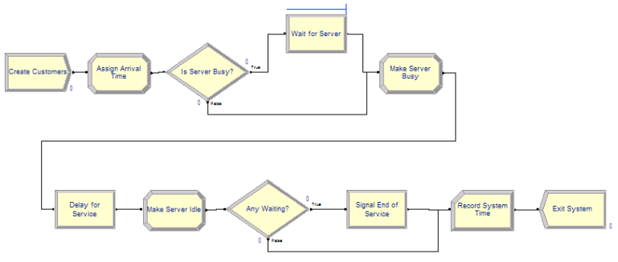
Figure 6.47 illustrates the flow chart for the implementation. The model represents the pseudo-code almost verbatim. The new HOLD and SIGNAL modules are shown in Figure 6.48 and Figure 6.49, respectively. The completed model can be found in file FirstMM1HoldSignal.doe found in the chapter files.
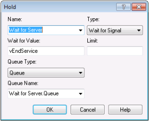
Notice that the HOLD module has an option drop down menu that allows the user to select one of the aforementioned hold options. In addition, the Wait For Value field indicates the value on which the entities will wait. Here is it a variable called vEndService. It can be any valid expression that evaluates to an integer. The Limit field (blank in this example) can be used to set to limit how many entities will be released when the signal is received.
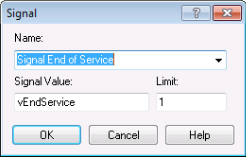
Figure 6.49 shows the SIGNAL module. The Signal Value field indicates the signal that will be broadcast. The Limit field indicates the number of entities to be released when the signal is completed. In this case, because the server works on 1 customer at at time, the limit value is set to 1. This causes 1 customer to be released from the HOLD, whenever the signal is sent.
Figure 6.50 presents the result from running the model for 30 replications with warm up of 30,000 hours and a run length of 80,000. The results match very closely the theoretical results for this M/M/1 situation.
There is one key point to understand in this implementation. What would happen if we did not first check if the server was busy before going into the HOLD queue? If we did not do this, then no customers would ever get signaled! This is because, the signal comes at the end of service and no customers would ever reach the SIGNAL (because they would all be waiting for the signal that is never coming). This is a common modeling error when first using the HOLD/SIGNAL combination.
A fundamental aspect of the HOLD/SIGNAL modeling constructs is that entities waiting in the HOLD module are signaled from a SIGNAL module. In the last example, the departing entity signaled the waiting entity to proceed. In the next implementation, we are going to have two types of entities. One entity will represent the customer. The second entity will represent the server. We will use the HOLD/SIGNAL constructs to communicate between the two processes.
6.5.1.2 Second Solution to M/M/1 with HOLD/SIGNAL Example
In this implementation, we will have two process flows, one for the customers and one for the server. At first, this will seem very strange. However, this approach will enable a great deal of modeling flexibility. Especially important is the notion of modeling a resource, such as a server, with its own process. Modeling a resource as an active component of the system (rather than just passively being called) provides great flexibility. Flexibility that will serve you well when approaching some complicated modeling situations. The key to using to two process flows for this modeling is to communicate between the two processes via the use of signals.
Figure 6.51 presents the model for this second implementation. Note the two process flows in the figure. The file SecondMM1HoldSignal.doe contains the details.
The logic follow very closely the pseudo-code provided in the following pseudo-code.
CREATE customer every EXPO(1)
ASSIGN myArriveTime = TNOW
SIGNAL server of arrival
Signal Value = vArrivalSignal
END SIGNAL
HOLD in Server Queue
Wait for Begin Service Signal
END HOLD
HOLD in Service Queue
Wait for End Service Signal
END HOLD
RECORD TNOW - myArriveTime
DISPOSE of customer
CREATE 1 server at time 0.0
LABEL: A
ASSIGN vServerStatus = 0
HOLD Wait for Customer arrival signal
Wait for Value = vArrivalSignal
END HOLD
LABEL: B
SIGNAL Start Service
Signal Value = vStartService
Signal Limit = 1
END SIGNAL
ASSIGN vServerStatus = 1
DELAY for EXPO(0.7)
SIGNAL End Service
Signal Value = vEndService
Signal Limit = 1
END SIGNAL
DECIDE
IF Server Queue is not empty
GOTO to LABEL B:
ELSE
GOTO to LABEL A:
ENDIF
END DECIDEIn the pseudo-code, the first CREATE module creates customers according to the exponential time between arrivals and then the time of arrival is noted in order to later record the system time. Next, the customer signals that there has been an arrival. Think of it as the customer ringing the customer service bell at the counter. The customer then goes into the HOLD to await the beginning of service. If the server was busy when the signal went off, the customer just continues to wait. If the server was idle (waiting for a customer to arrive), then the server moves forward in their process to signal the customer to start service. When the customer gets the start service signal, the customer moves immediately into another HOLD queue. This second hold queue provides a place for the customer to wait while the server is performing the service. When the end of service signal occurs the customer departs after recording the system time.
The second CREATE module, creates a single entity that represents the server. Essentially, the server will cycle through being idle and busy. After being created the server sets its status to idle (0) and then goes into a HOLD queue to await the first customer’s arrival. When the customer arrives, the customer sends a signal. The server can then proceed with service. First, the server signals the customer that service is beginning. This allows the customer to proceed to the hold queue for service. Then, the server delays for the service time. After the service time is complete, the server signals the customer that the end of service has occurred. This allows the customer to depart the system. After signaling the end of service, the server checks if there are any waiting customers, if there are waiting customers, the entity representing the server is sent to Label B to signal a start of service. If there are no customers waiting, then the entity representing the server is sent to Label A, to wait in a hold queue for the next customer to arrive.
This signaling back and forth must seem overly complicated. However, this example illustrates how two entities can communicate with signals. In addition, the notion of modeling a server as a process should open up some exciting possibilities. The modeling of a server as a process permits very complicated resource allocation rules to be embedded in a model.
Consider modeling resources as entities. This allows logic to be used to model how the resource behaves given the state of the system. This is an excellent way to model resources as intelligent agents.
6.5.2 Using Wait and Signal to Release Entities
In many situations, entities will need to wait until a specific time or condition occurs within a system. One classic example of this is order picking waves within a distribution facility. In this situation, orders (the entities) will arrive throughout the day and be held until a particular time that they can be released. The release of sets of the orders is timed to correspond to particular periods of time. In the parlance of distribution center picking operations, these periods are called waves, like waves hitting a beach.
The length and timing of the waves is typically determined by some optimization algorithm that ensures that the picking operations can be completed in an optimal manner in time for the subsequent shipping of the items. In addition, each order is assigned (again according to some optimization method) to a particular period (wave). For simplicity, we will assume that the periods (waves) are one hour long and that the orders are randomly assigned to each wave. Again, these assignments are often much more complex.
In this section, we will examine how to release picking orders within a distribution center under the following assumptions:
Assume that at the beginning of a shift there are a number of orders that need to be picked within the warehouse
Let N be the number of orders to pick
Assume that N ~ Poisson (mean rate = 100 orders/day)
Assume that the warehouse has 4 picking periods (1, 2, 3, 4)
The first picking period starts at time 0.0
Each picking period lasts 60 minutes
Assume that the orders are equally likely to be assigned to any of the four periods
After the orders are released, they proceed to pickers who pick the orders and send them to be shipped.
- Assume that the time to pick the entire order is TRIA(5, 10, 15) minutes
Build and Arena model to simulate this system over the picking periods
- Determine the number of pickers needed to satisfactorily complete the picking operations.
The purpose of this example is to illustrate the basic ideas of using the wait and signal functionality of Arena to release the orders. The basic strategy will be to assign to each order a number that indicates when it should be released. In other words, we assign its release period (or wave). Then, the arriving order will wait in a HOLD module for the appropriate signal representing the start of its period. At which time, the order will be released to pickers for processing.
The first modeling issue is to represent is the creation of the orders. In a typical distribution center setting the customer orders may arrive throughout the day; however, they are typically not processed immediately upon arrival. In most situations, they are processed by the order processing systems of the distribution center (human or computer) and made ready for release. There is typically a random number of orders to be processed. For simplicity in this example, we will assume that the number of orders per day is well modeled with a Poisson distribution with a mean rate of 100 per day. Thus, at the beginning of the day all orders are available and assigned their release period. Let’s assume that there will be four release periods, each spaced 1 hour apart with the first period starting at time 0.0 and lasting one hour. Thus, the second period starts at time 1.0, and lasts an hour, etc. We will number the (waves) periods 1, 2, 3, 4.
Because of our assumption that orders are randomly assigned to waves, we need a distribution to represent this assignment. To keep it simple, we will assume that the orders are equally likely to be assigned any of the periods 1, 2, 3, 4. Thus, we need to generate a discrete uniform random variate over the range from 1 to 4. Recall that the Arena formula for generating a DU(a,b) random variate, X, is:
X = a + AINT((b - a + 1)*UNIF(0,1))
Thus, to generate DU(1,4), we have,
1 + AINT((4 - 1 + 1)*UNIF(0,1)) = 1 + AINT(4*UNIF(0,1))
Again, in general, the assignment of orders to particular picking periods (waves) is often a much more complex process that takes into account the order due dates, the work associated with the orders, and the locations of the items to be picked.
Let’s take a look at the pseudo-code to create and hold the orders for later release.
ATTRIBUTES: myWave // to hold which picking wave to listen for
--
CREATE POIS(100) entities with 1 event at time 0.0
ASSIGN myWave = 1 + AINT(4*UNIF(0,1))
HOLD wait for signal myWave
Go To: Label Picking ProcessThat’s it! This will create the orders, assign their wave number and cause them to wait within a HOLD module for a signal that is specified by the value of the attribute, myWave. When this signal (number) is broadcast by a SIGNAL module all the entities (orders) waiting in the HOLD queue for that corresponding wave number will be released and proceed for further processing.
The second modeling issue is to represent the timing and signaling of the picking waves. To implement this situation, we will create a “clock-entity” that determines the period and makes the signal. For this situation we will use a global variable, vPeriod, that keeps track of the current period and is used to signal the start of the period.
Now, we have one tricky issue to address. The start of the first wave happens at time 0.0, but as noted in the previous pseudo-code, the orders for the day are also created at time 0.0. We need to coordinate between two CREATE modules to ensure that the clock-entity allows the orders to be created first. We must ensure that the orders are in the HOLD module before the signal for the first wave occurs; otherwise, the orders associated with the first wave will not be in the HOLD queue when the signal occurs. Thus, they will miss the first signal and not be released.
While there are number of ways to address this issue, the simplest is to cause the clock-entity to be created infinitesimally after time 0.0. This will allow all the entities (orders) from the order creation process to be created and go into the HOLD module queue before the clock-entity signals the start of the first wave. Let’s take a look at the pseudo-code for this situation.
We will use three variables to represent the time periods.
VARIABLES:
vPeriod = 0 // to track the current period
vPeriodLength = 60 // minutes per period
vLastPeriod = 4 // the number of periodsThen, we will use a logical entity, call it the clock-entity, that will loop around signaling the appropriate period. In essence, it is ticking off the periods through time. This is a very common modeling pattern.
CREATE 1 entity at time 0.0001
A:
ASSIGN vPeriod = vPeriod + 1
If vPeriod \> vLastPeriod
DISPOSE
ELSE
SIGNAL vPeriod
DELAY vPeriodLength minutes
Go to: Label ANotice that in this pseudo-code there are two defined variables (vPeriodLength and vLastPeriod) to make the code more generic. Using these variables, we can easily vary the number of periods and the length of each period. Notice also that the CREATE module indicates that the clock entity is created at time 0.0001. This ensures that the CREATE module associated with creating the orders goes first (at time 0.0) and allows the orders to fill up the HOLD queue. The clock-entity then increments the variable, vPeriod, so that the current period (wave) is noted. We then check if the current period is greater than the last period to simulate. If so, the clock-entity is disposed.
If the last period has not happened, we need to signal the start of the period. When the clock-entity executes the SIGNAL module, the value of the signal (vPeriod) is broadcast globally throughout the model. Any entities in any HOLD modules that are waiting for that particular number as their signal will be removed from the HOLD queue and placed in the ready state to be processed at the current time. Since the clock-entity immediately enters a DELAY module, it is placed in the time-delayed state to become the active entity 60 minutes later. Thus, all the entities that were signaled can now be processed. According to our previous pseudo-code, they will go to the label Picking Process.
As noted previously, there are a number of other ways to coordinate the timing of the order process and the wave process to ensure that the orders are placed in the HOLD queue before the clock-entity makes the first signal. Rather than using an infinitesimal delay as illustrated here, you could remove the CREATE module for the clock-entity. To ensure that the clock-entity is made after the orders are made, you can have the order making process create the clock-entity. One way to do this is to have the first order created go through a SEPARATE module. The duplicate entity will be the clock entity and it would be sent to the logic that signals the waves (pseudo code labeled A). Because a SEPARATE module places the duplicate entities in the ready state, the clock-entity will not proceed until the orders are all waiting. The interested reader is encouraged to test their knowledge by implementing this approach. The implementation and analysis of this example within Arena is left as an exercise.
In the next section, we see how essential the wait and signal constructs are to the modeling of an important situation within inventory systems.
6.5.3 Modeling a Reorder Point, Reorder Quantity Inventory Policy
In an inventory system, there are units of an item (e.g. computer printers, etc.) for which customers make demands. If the item is available (in stock) then the customer can receive the item and depart. If the item is not on hand when a demand from a customer arrives then the customer may depart without the item (i.e. lost sales) or the customer may be placed on a list for when the item becomes available (i.e. back ordered). In a sense, the item is like a resource that is consumed by the customer. Unlike the previous notions of a resource, inventory can be replenished. The proper control of the replenishment process is the key to providing adequate customer service. There are two basic questions that must be addressed when controlling the inventory replenishment process: 1) When to order? and 2) How much to order?. If the system does not order enough or does not order at the right time, the system not be able to fill customer demand in a timely manner. Figure 6.52 illustrates a simple inventory system.
There are a number of different ways to manage the replenishment process for an inventory item. These different methods are called inventory control policies. An inventory control policy must determine (at the very least) when to place a replenishment order and how much to order. This section examines the use of a reorder point (\(r\)), reorder quantity (\(Q\)) inventory policy. This is often denoted as an \((r, Q)\) inventory policy. The modeling of a number of other inventory control policies will be explored as exercises. After developing a basic understanding of how to model an \((r, Q)\) inventory system, the modeling can be expanded to study supply chains. A supply chain can be thought of as a network of locations that hold inventory in order to satisfy end customer demand.
The topic of inventory systems has been well studied. A full exposition of the topic of inventory systems is beyond the scope of this text, but the reader can consult a number of texts within the area, such as (Hadley & Whitin, 1963), (Axsäter, 2006), Silver et al. (1998), or (Zipkin, 2000) for more details. The reader interested in supply chain modeling might consult (Nahmias, 2001), (Askin & Goldberg, 2002), (Chopra & Meindl, 2007), or (Ballou, 2004).
Within this section we will develop a model of a continuous review \((r, Q)\) inventory system with back-ordering. In a continuous review \((r, Q)\) inventory control system, demand arrives according to some stochastic process. When a demand (customer order) occurs, the amount of the demand is determined, and then the system checks for the availability of stock. If the stock on-hand is enough for the order, the demand is filled and the quantity on-hand is decreased. On the other hand, if the stock on-hand is not enough to fill the order, the entire order is back-ordered. The back-orders are accumulated in a queue and they will be filled after the arrival of a replenishment order. Assume for simplicity that the back-orders are filled on a first come first served basis. The inventory position (inventory on-hand plus on-order minus back-orders) is checked each time after a regular customer demand and the occurrence of a back-order. If the inventory position reaches or falls under the reorder point, a replenishment order is placed. The replenishment order will take a possibly random amount of time to arrive and fill any back-orders and increase the on-hand inventory. The time from when a replenishment order is placed until the time that it arrives to fill any back-orders is often called the lead time for the item.
There are three key state variables that are required to model this situation. Let \(I(t)\), \(\mathit{IO}(t)\), and \(\mathit{BO}(t)\) be the amount of inventory on hand, on order, and back-ordered, respectively at time \(t\). The net inventory, \(\mathit{IN}(t) = I(t) - \mathit{BO}(t)\), represents the amount of inventory (positive or negative). Notice that if \(I(t) > 0\), then \(\mathit{BO}(t) = 0\), and that if \(\mathit{BO}(t) > 0\), then \(I(t) = 0\). These variables compose the inventory position, which is defined as:
\[\mathit{IP}(t) = I(t) + \mathit{IO}(t) - \mathit{BO}(t)\]
The inventory position represents both the current amount on hand, \(I(t)\), the amounted back ordered, \(\mathit{BO}(t)\), and the amount previously ordered, \(\mathit{IO}(t)\). Thus, when placing an order, the inventory position can be used to determine whether or not a replenishment order needs to be placed. Since, \(\mathit{IO}(t)\), is included in \(\mathit{IP}(t)\), the system will only order, when outstanding orders are not enough to get \(\mathit{IP}(t)\) above the reorder point.
In the continuous review \((r, Q)\) policy, the inventory position must be checked against the reorder point as demands arrive to be filled. After filling (or back-ordering) a demand, either \(I(t)\) or \(\mathit{BO}(t)\) will have changed (and thus \(\mathit{IP}(t)\) will change). If \(\mathit{IP}(t)\) changes, it must be checked against the reorder point. If \(\mathit{IP}(t) \leq r\), then an order for the amount \(Q\) is placed.
For simplicity, assume that each demand that arrives is for 1 unit. This simplifies how the order is processed and the processing of any back orders. The pseudo-code for this situation is given the following pseudo-code.
CREATE demand
ASSIGN myAmtDemanded = 1
Send to LABEL: Order Fulfillment
LABEL: Order Fulfillment
DECIDE
IF I(t) >= myAmtDemanded THEN //fill the demand
ASSIGN I(t) = I(t) - myAmtDemanded
ELSE // handle the backorder
ASSIGN BO(t) = BO(t) + myAmtDemanded
SEPARATE Duplicate 1 entiy
Send duplicate to LABEL: Handle Back Order
ENDIF
ASSIGN IP(t) = I(t) + IO(t) - BO(t)$
Send to LABEL: Replenishment Ordering
END DECIDE
LABEL: Handle Back Order
HOLD Back order queue: wait for signal
On Signal: release all from queue
END HOLD
ASSIGN BO(t) = BO(t) - myAmtDemanded
Send to LABEL: Order Fulfillment
LABEL: Replenishment Ordering
IF IP(t) <= r
ASSIGN IO(t) = IO(t) + Q //place the order
DELAY for lead time
ASSIGN IO(t) = IO(t) - Q //receive the order
ASSIGN I(t) = I(t) + Q
SIGNAL: Hold back order queue
ENDIF
DISPOSEReferring to the pseudo-code, the entity being created is a customer demand. The amount of the demand should be an attribute (myAmtDemanded) of the entity having value 1. After the customer arrives, the customer is sent to order fulfillment. Notice the use of a label to indicate the order filling logic.
At order fulfillment, we need to check if there is inventory available to satisfy the demand. If the amount required can be satisfied \(I(t) \geq \mathit{myAmtDemanded}\). Then, the on hand inventory is decremented by the amount of the demand. If the demand cannot be satisfied \(I(t) < \mathit{myAmtDemanded}\)). In this case, the amount waiting in the back order queue, \(\mathit{BO}(t)\), is incremented by the amount demanded. Then, a duplicate is made so that the duplicate can be sent to the back order queue.
In either case of filling the demand or not filling the demand, the inventory position must be updated. This is because either \(I(t)\) or \(\mathit{BO}(t)\) changed. Since the inventory position changed, we must check if a replenishment order is necessary. The entity is sent to the replenishment logic.
At the replenishment logic, the inventory position is checked against the reorder point. If the inventory position is less than or equal to the reorder point, an order is placed. If no order is placed, the entity skips over the order placement logic and is disposed. If an order is placed, the on order variable is incremented by the reorder quantity and the delay for the lead time started. Once the lead time activity is completed, the on order and on hand variables are updated and a signal is sent to the back-order queue. A signal is sent to the back order queue so that if there are any demands waiting in the back order queue, the demands can try to be filled.
The key performance measures for this type of system are the average amount of inventory on hand, the average amount of inventory back-ordered, the percentage of time that the system is out of stock, and the average number of orders made per unit time.
Let’s discuss these performance measures before indicating how to collect them within a simulation. The average inventory on hand and the average amount of inventory back-ordered can be defined as follows:
\[\begin{aligned} \bar{I} & = \frac{1}{T}\int_0^T I(t)\mathrm{d}t \\ \overline{\mathit{BO}} & = \frac{1}{T}\int_0^T \mathit{BO}(t)\mathrm{d}t\end{aligned}\]
As can be seen from the definitions, both \(I(t)\) and \(\mathit{BO}(t)\) are time-persistent variables and their averages are time averages. Under certain conditions as \(T\) goes to infinity, these time averages will converge to the steady state performance for the \((r, Q)\) inventory model. The percentage of time that the system is out of stock can be defined based on \(I(t)\) as follows:
\[SO(t) = \begin{cases} 1 & I(t) = 0\\ 0 & I(t) > 0 \end{cases}\]
\[\overline{\mathit{SO}} = \frac{1}{T}\int_0^T \mathit{SO}(t)\mathrm{d}t\]
Thus, the variable \(SO(t)\) indicates whether or not there is no stock on hand at any time. A time average value for this variable can also be defined and interpreted as the percentage of time that the system is out of stock. One minus \(\overline{\mathit{SO}}\) can be interpreted as the proportion of time that the system has stock on hand. Under certain conditions (but not always), this can also be interpreted as the fill rate of the system (i.e. the fraction of demands that can be filled immediately). Let \(Y_i\) be an indicator variable that indicates 1 if the \(i^{th}\) demand is immediately filled (without back ordering) and 0 if the \(i^{th}\) demand is back ordered upon arrival. Then, the fill rate is defined as follows.
\[\overline{\mathit{FR}} = \frac{1}{n} \sum_{i=1}^{n} Y_i\]
Thus, the fill rate is just the average number of demands that are directly satisfied from on hand inventory. The variables \(\overline{\mathit{SO}}\) and \(\overline{\mathit{FR}}\) are measures of customer service.
To understand the cost of operating the inventory policy, the average number of replenishment orders made per unit time or the average order frequency needs to be measured. Let \(N(t)\) be the number of replenishment orders placed in \((0,t]\), then the average order frequency over the period \((0,t]\) can be defined as:
\[\overline{\mathit{OF}} = \frac{N(T)}{T}\]
Notice that the average order frequency is a rate (units/time).
In order to determine the best settings of the reorder point and reorder quantity, we need an objective function that trades-off the key performance measures within the system. This can be achieved by developing a total cost equation on a per time period basis. Let \(h\) be the holding cost for the item in terms of $/unit/time. That is, for every unit of inventory held, we accrue \(h\) dollars per time period. Let \(b\) be the back order cost for the item in terms of $/unit/time. That is, for every unit of inventory back ordered, we accrue \(b\) dollars per time period. finally, let \(k\) represent the cost in dollars per order whenever an order is placed. The settings of the reorder point and reorder quantity depend on these cost factors. For example, if the cost per order is very high, then we should not want to order very often. However, this means that we would need to carry a lot of inventory to prevent a high chance of stocking out. If we carry more inventory, then the inventory holding cost is high.
The average total cost per time period can be formulated as follows:
\[\overline{\mathit{TC}} = k\overline{\mathit{OF}} + h\bar{I} + b\overline{\mathit{BO}}\]
A discussion of the technical issues and analytical results related to these variables can be found in Chapter 6 of (Zipkin, 2000). Let’s take a look at an example that illustrates an inventory situation.
Example 6.3 An inventory manager is interested in understanding the cost and service trade-offs related to the inventory management of computer printers. Suppose customer demand occurs according to a Poisson process at a rate of 3.6 units per month and the lead time is 0.5 months. The manager has estimated that the holding cost for the item is approximately $0.25 per unit per month. In addition, when a back-order occurs, the estimate cost will be $1.75 per unit per month. Every time that an order is placed, it costs approximately $0.15 to prepare and process the order. The inventory manager has set the reorder point to 1 units and the reorder quantity to 2 units. Develop a simulation model that estimates the following quantities:
Average inventory on hand and back ordered
Average frequency at which orders are placed
Probability that an arriving customer does not have their demand immediately filled
Average total cost per time
The Arena model will follow closely the previously discussed pseudo-code. To develop this model, first define the variables to be used as per Figure 6.53. The reorder point and reorder quantity have been set to (\(r = 1\)) and (\(Q = 2\)), respectively. The costs have be set based on the example. Notice that the report statistics check boxes have been checked for the on hand inventory and the back-ordered inventory. This will cause time-based statistics to be collected on these variables.
Figure 6.54 illustrates the logic for creating incoming demands and for order fulfillment. First, an entity is created to represent the demand. This occurs according to a time between arrivals with an exponential distribution with a mean of (1.0/0.12) days (3.6 units/month * (1 month/30 days) = 0.12 units/day).
The ASSIGN module in Figure 6.55 shows the amount demanded set to 1 and a stock out indicator set to zero. This will be used to tally the probability that an incoming demand is not filled immediately from on hand inventory. This is called the probability of stocking out. This is the complement of the fill rate. Then, a ROUTE module with zero transfer delay is used to send the demand to a station to handle the order fulfillment. Note that a STATION was used here to represent a logical label to which an entity can be sent.
At the order fulfillment station, the DECIDE module is used to check if the amount demanded is less than or equal to the inventory on hand. If true, the demand is filled using the ASSIGN module to decrement the inventory on hand. The RECORD module is used to collect statistics for the probability of stock out. The inventory position is updated and then the demand is sent to the reordering logic. If false, the demand is back-ordered. The ASSIGN module labeled Backorder increments the number of back orders. Then the SEPARATE module creates a duplicate, which goes to the station than handles back orders. The original is sent to update the inventory position before being sent to the reordering logic via a ROUTE module.
The Fill Demand, BackOrder, and Update Inventory Position ASSIGN modules have the form shown in Figure 6.56. The amount on hand or the amount back-ordered is decreased or increased accordingly. In addition, the inventory position is updated. In the back-ordering ASSIGN module, the stock out flag is set to 1 to indicate that this particular demand did not get an immediate fill.
When the demand is ultimately filled, it will pass through the RECORD module within Figure 6.54. Notice, that in the RECORD module, the expression option is used to record on the attribute, which has a value of 1 if the demand had been back-ordered upon arrival and the value 0 if it had not been back-ordered upon initial arrival. This indicator variable will estimate the probability that an arriving customer will be back-ordered. In inventory analysis parlance, this is called the probability of stock out. One minus the probability of stock out is called the fill rate for the inventory system. Under Poisson arrivals, it can be shown that the probability of an arriving customer being back-ordered will be the same as \(\overline{\mathit{SO}}\), the percentage of time that the system is stocked out. This is due to a phenomenon called PASTA (Poisson Arrivals See Time Averages) and is discussed in (Zipkin, 2000) as well as many texts on stochastic processes (e.g. (Tijms, 2003))
The logic representing the back ordering and replenishment ordering process is given in Figure 6.58. Notice how STATION modules have been used to denote the start of the logic. In the case of back ordering, the Handle Back Order station has a HOLD module, which will hold the demands waiting to be filled in a queue. See Figure 6.59. When the HOLD module is signaled (value = 1), the waiting demands are released. The release will be triggered after a replenishment order arrives. The number of waiting back orders is decremented in the ASSIGN module and the demands are sent via a ROUTE module for order fulfillment.
At the Reorder Logic station, the DECIDE module checks if the inventory position is equal to or below the reorder point. If this is true, then the amount on order is updated. After the amount of the order is determined, the order entity experiences the delay representing the lead time. After the lead time, the order has essentially arrived to replenish the inventory. The corresponding ordering and replenishment ASSIGN modules and the subsequent SIGNAL modules are given in Figure 6.60 and Figure 6.61, respectively.
The basic model structure is now completed; however, there are a few issues related to the collection of the performance measures that must be discussed. The average order frequency must be collected. Recall \(\bar{OF} = N(T)/T\) that . Thus, the number of orders placed within the time interval of interest must be observed. This can be done by creating a logic entity that will observe the number of orders that have been placed since the start of the observation period. In Figure 6.54, there is a variable called, vNumOrders, which is incremented each time an order is placed. This is, in essence, \(N(T)\). Figure 6.62 shows the order frequency collection logic. First an entity is created every, \(T\), time units. In this case, the interval is monthly (every 30 days).
Then the RECORD module, shown in Figure 6.63, observes the value of vNumOrders. The following ASSIGN module sets vNumOrders equal to zero. Thus, vNumOrders represents the number of orders accumulated during the 30 day period.
To close out the statistical collection of the performance measures, the collection of \(\overline{\mathit{SO}}\) as well as the cost of the policy needs to be discussed. To collect \(\overline{\mathit{SO}}\), a time-persistent statistic needs to be defined using the Statistic module of the Advanced Process panel as in Figure 6.64. The expression (vOnHand == 0) is a boolean expression, which evaluates to 1.0 if true and 0.0 if false. By creating a time-persistent statistic on this expression, the proportion of time that the on-hand is equal to 0.0 can be tabulated.
To record the costs associated with the policy, three Output statistics are needed. Recall that these are designed to be observed at the end of each replication. For the inventory holding cost, the time-average of the on-hand inventory variable, DAVG(vOnHand Value), should be multiplied by the holding cost per unit per time. The back-ordering cost is done in a similar manner. The ordering cost is computed by taking the cost per order times the average order frequency. Recall that this was captured via a RECORD module every month. The average from the RECORD module is available through the TAVG() function. Finally, the total cost is tabulated as the sum of the back-ordering cost, the holding cost, and the ordering cost. In Figure 6.64, this was accomplished by using the OVALUE() function for OUTPUT statistics. This function returns the last observed value of the OUTPUT statistic. In this case, it will return the value observed at the end of the replication. Each of these statistics will be shown on the reports as user-defined statistics. The completed model is found in file rQInventoryModel.doe in the chapter files.
The case of (r = 1, Q = 2) was run for 30 replications with a warm up period of 3600 days and a run length of 39,600 days. Figure 6.65 indicates that the total cost is about 1.03 per month with a probability of stocking out close to 40%. Notice that the stock out probability is essentially the same as the percentage of time the system was out of stock. This is an indication that the PASTA property of Poisson arrivals is working according to theory.
This example should give you a solid basis for developing more sophisticated inventory models. While analytical results are available for this example, small changes in the assumptions necessitate the need for simulation. For example, what if the lead times are stochastic or the demand is not in units of 1. In the latter case, the filling of the back-order queue should be done in different ways. For example, suppose customers wanting 5 and 3 items respectively were waiting in the queue. Now suppose a replenishment of 4 items comes in. Do you give 4 units of the item to the customer wanting 5 units (partial fill) or do you choose the customer wanting 3 units and fill their entire back-order and give only 1 unit to the customer wanting 5 units. The more realism needed, the less analytical models can be applied, and the more simulation becomes useful.
In the next section, we will expand our modeling capabilities by looking at a number of useful constructs related to how entities behave within a model.
6.6 Miscellaneous Modeling Concepts
This section discusses a number of additional constructs available within that facilitate common modeling situations that have not been previously described. The first topic allows for finer control of the routing of entities to stations for processing. The second situation involves improving the scalability of your models by making stations generic. Lastly, the use of the active entity to pick up and drop off other entities will be presented. This allows for another way to form groups of entities that travel together that is different than the functionality available in the BATCH module.
6.6.1 Picking Between Stations
Imagine that you have just finished your grocery shopping and that you are heading towards the check-out area. You look ahead and scan the checkout stations in order to pick what you think will be the line that will get your check out process completed the fastest. This is a very common situation in many modeling instances: the entity is faced with selecting from a number of available stations based on the state of the system. While this situation can be handled with the use of DECIDE modules, the implementation of many criteria to check can be tedious (and error prone). In addition, there are often a set of common criteria to check (e.g. shortest line, least busy resource, etc.). Because of this has available the PICKSTATION module on the Advanced Transfer panel. The PICKSTATION module combines the ability to check conditions prior to transferring the entity out of a station.
SMARTS file, Smarts113.doe, represents a good example for this situation In the model, entities are created according to a Poisson process with a rate of 1 every minute. The arriving entities then must choose between two stations for service. In this case, their choice should be based on the number of entities en route to the stations and the current number of entities waiting at the stations. After receiving processing at the stations, the entities then depart the system.
As can be seen in Figure 6.66, the entity is created and then immediately enters the Entry station. From the Entry station, the entity will be routed via the PICKSTATION module to one of the two processing stations. The processing is modeled with the classic SEIZE, DELAY, RELEASE logic. After the processing, the entity is routed to the Later (exit) station where it is disposed. The only new modeling construct required for this situation is the PICKSTATION module.
The PICKSTATION module is very similar to a ROUTE module as shown in Figure 6.67. The top portion of the module defines the criteria by which the stations will be selected. The bottom portion of the module defines the transfer out mechanism. In the figure, the module has been set to select based on the minimum of the number in queue and the number en route to the station. The Test Condition field allows the user to pick according to the minimum or the maximum. The Selection Based On section specifies the constructs that will be included in the selection criterion. The user must provide the list of stations and the relevant construct to test at each station (e.g. the process queue). The selection of the construct is dependent on criteria that were selected in the Selection Based On area.
Figure 6.68 illustrates the dialog box for adding a station to the list when all criteria have been selected. Notice that the specification is based on the station. In the figure, the user can select the station, a queue at the station, a resource at the station or a general expression to be evaluated based on the station. scans the list to find the station that has the minimum (or maximum) according to the criteria selected. In the case of ties, will pick the station that is listed first according the Stations list. After the station has been selected, the entity will be routed according to the standard route options (transport, route, convey, and connect). In the case of the connect option, the user is given the option to save the picked station in an attribute, which can then be used to specify the station in a transfer module (e.g. CONVEY). In addition, since the choice of transport or convey requires that the entity has control over a transporter or has accessed the conveyor, the entity must first have used the proper modules to gain control of the material handling construct (e.g. REQUEST) prior to entering the PICKSTATION.
As you can see, the specification and operation of the PICKSTATION module is relatively straight forward. The only difficulty lies in properly using the Expression option.
Let’s consider a modification to the example to illustrate the use of an expression. Let’s suppose that the two resources within the example follow a schedule such that every hour the resources take a 10 minute break, with the first resource taking the break at the beginning of the hour and the second resource taking a break at the middle of the hour. This ensures that both resources are not on break at the same time. In this situation, arriving customers would not want to choose the station with the resource on break; however, if the station is picked based solely on the number in queue and the number en route, the entities may be sent to the station on break. This is because the number in queue and the number en route will be small (if not zero) when the resource is on break. Therefore some way is needed to ensure that the station on break is not chosen during the break time. This can be done by testing to see if the resource is inactive. If it is inactive, the criteria can be multiplied by a large number so that it will not be chosen.
To implement this idea, two schedules were created, one for each resource to follow. Figure 6.69 shows the two schedules. In the schedule for resource 1, the capacity is 0 for the first 10 minutes and is then 1 for the last 50 minutes of the hour. The schedule then repeats. For the second resource’s schedule, the resource is available for 30 minutes and then the break starts and lasts for 10 minutes. The resource is then available for the rest of the hour. This allows the schedule to repeat hourly.
Now the PICKSTATION module needs to be adjusted so that the entity does not pick the station with the resource that is on break. This implementation can be accomplished with the expression: (STATE(resource name) == INACTIVE_RES)*vBigNumber. In this case, if the named resource’s state is inactive the Boolean expression yields a 1 for true. Then the 1 is multiplied by a big number (e.g. 10000), which would yield the value 10000 if the state is inactive. Since the station with minimum criteria is to be selected, this will penalize any station that is currently inactive. The implementation of this in the PICKSTATION module is shown in Figure 6.70. If you run the model, Smarts113-PickStation-ResourceStaffing.doe, that accompanies this chapter, you can see that the entity does not pick the station that is on break.
In many models (including this one), the station logic is essentially the same, SEIZE, DELAY, RELEASE. The next section considers the possibility of replacing many stations with a generic station that can handle any entity intended for a number of stations.
6.6.2 Generic Station Modeling
A generic station is a station (and its accompanying modules) that can handle the processing for any number of designated stations. To accomplish this, sets must be used to their fullest. Generic stations allow a series of commonly repeating modules to be replaced by a set of modules, sort of like a subroutine. However, the analogy to subroutines is not very good because of the way Arena handles variables and attributes. The trick to converting a series of modules to using generic stations is to properly index into sets. An example is probably the best way to demonstrate this idea.
Let’s reconsider the test and repair shop from Chapter 4 and shown in Figure 6.71. Notice that the three testing stations in the middle of the model all have the same structure. In fact, the only difference between them is that the processing occurs at different stations. In addition, the parts are routed via sequences and have their processing times assigned within the SEQUENCE module. These two facts will make it very easy to replace those 9 modules with 4 modules that can handle any part intended for any of the test stations.
Figure 6.72 show the generic version of the test and repair model. As shown in the figure, the testing stations have been replaced by the station name Generic Station. Notice that the generic modeling is: STATION, SEIZE, DELAY, RELEASE, ROUTE. The real trick of this model begins with set modeling.
Three sets must be defined for this model: a set to hold the test stations, a set to hold the test machine resources, and a set to hold the processing queues for the test machines.
There are two ways to define a set of stations: 1) using the Advanced Set module or 2) using the set option within the STATION module. Since a generic station is being built, it is a bit more convenient to use the set option within the STATION module.
Figure 6.73 illustrates the generic station module. Notice how the station type field has been specified as “Set”. This allows a set to be defined to hold the stations to be represented by this station set. The station set members for the test stations have all been added. will use this one module to handle any entity that is transferred to any of the listed stations. A very important issue in this modeling is the order of the stations listed. In the other sets that will be used, you need to make sure that the resources and queues associated with the stations are listed in the same order.
When an entity is sent to one of the stations listed, which station the generic station is currently representing must be known. This is accomplished with the Save Attribute. The saved attribute will record the index of the station in its set. That’s important enough to repeat. It does not hold the station selected. It holds the index for the station in the station set. This index can be used to reference into a queue set and a resource set to make the processing generic. Figure 6.74 illustrates the resource and queue sets needed for the model. The resource set is defined using the SET module on the Basic Process panel, and the queue set is defined using the Advanced SET module on the Advanced Process panel. With these sets defined, they can be used in the SEIZE and RELEASE modules.
In the original model, a PROCESS module was used to represent the testing processes. In this generic model, the PROCESS module will be replaced with the SEIZE, DELAY, and RELEASE modules from the Advanced Process panel. The primary reason for doing this is so that the queue set can be accessed when seizing the resource.
Figure 6.75 illustrates the SEIZE module for the generic test and repair model. When seizing the resource the set option has been used by selecting a specific member from the TestMachineSet as specified by the myStationIndex. Thus, if the entity had been sent to the test station 2, the myStationIndex would have the value 2. This value is then used as the index into the TestMachineSet. Now you should see why the order of the sets matters. In addition, if the entity must wait for the resource it needs to know which queue to wait in. The SEIZE module has an option to allow the queue to be selected from a set. In this case, the TestMachineQSet can be accessed by using the myStationIndex. Since there are multiple queues being handled by this one SEIZE module takes away the default queue animation. You can add back the animation queues using the Animate toolbar when you develop an animation for your model.
The DELAY module for the generic station is shown in Figure 6.76. It is simple to make generic because the SEQUENCE module is being used to assign to the myTestingTime attribute when the entity is routed to the station.
The RELEASE module for the generic station is shown in Figure 6.77. In this case, the set option has been used to specify which resource to release. The myStationIndex is used to index into the TestMachineSet to release a specific member. The ROUTE module is just like the ROUTE module used in the original test and repair model. It routes the part using the sequence option.
If you run this model, found in the file GenericRepairShop.doe, the results will be exactly as seen in Chapter 4. Now, you might be asking yourself: “This generic stuff seems like a lot of work. Is it worth it?” Well, in this case 4 flow chart modules were saved (5 in the generic versus 9 in the original model). Plus, three additional sets were added in the generic model. This doesn’t seem like much of a savings. Now, imagine a realistically sized model with many more test stations, e.g. 10 or more. In the original model, to add more testing stations you could cut and paste the STATION, PROCESS, ROUTE combination as many times as needed, updating the modules accordingly. In the generic model, all that is needed is to add more members to the sets. You would not need to change the flow chart modules. All the changes that would need to take place to run a bigger model would be in data modules (e.g. sets, sequences, etc). This can be a big advantage when experimenting and running different model configurations. The generic model will be much more scalable.
Until you feel comfortable with generic modeling, I recommend the following. First, you should develop the model without the generic modeling. Once the model has been tested and is working as you intended, then look for opportunities to make the model generic. Consider making it generic if you think you can take advantage of the generic components during experimentation and if you think reuse of the model is an important aspect of the modeling effort. If the model is only going to be used once to answer a specific question, then you probably don’t need to consider generic modeling. Even in the case of a one time model, if the model is very large, replacing parts of it with generic components can be a real benefit when working with the model. In this simple example, the generic modeling was easy because of the structure of the model. This will not always be the case. Thus, generic modeling will often require more thinking and adjustments than illustrated in this example; however, I have found it very useful in my modeling.
6.6.3 Picking up and Dropping Off Entities
In many situations, entities must be synchronized so that they flow together within the system. Chapter 4 presented how the BATCH and SEPARATE modules can be used to handle these types of situations. Recall that the BATCH module allows entities to wait in queue until the number of desired entities enter the BATCH module. Once the batch is formed, a single representative entity leaves the BATCH module. The batch representative entity can be either permanent or temporary. In the case of a temporary entity, the SEPARATE module is used to split the representative entity into its constituent parts.
What exactly is a representative entity? The representative entity is an entity created to hold the entities that form the batch in an entity group. An entity group is simply a list of entities that have been attached to a representative entity. The BATCH module is not the only way to form entity groups. In the case of a BATCH module, a new entity is created to hold the group. The newly created entity serves as the representative entity. In contrast, the PICKUP module causes the active entity (the one passing through the PICKUP module) to add entities from a queue to its entity group, thereby becoming a representative entity.
To get entities out of the entity group, the DROPOFF module can be used. When the active entity passes through the DROPOFF module, the user can specify which entities in the group are to be removed (dropped off) from the group. Since the entities are being removed from the group, the user must also specify where to send the entities once they have been removed. Since the entities that are dropped off were represented in the model by the active entity holding their group, the user can also specify how to handle the updating/specification of the attributes of the dropped off entities.
The PICKUP and DROPOFF modules are found on the Advanced Process Panel. Figure 6.78, Figure 6.79, Figure 6.80 illustrate the PICKUP and DROPOFF modules. In the PICKUP module, the quantity field specifies how many entities to remove from the specified queue starting at the given rank. For example, to pick up all the entities in the queue, you can use NQ(queue name) in the quantity field.
The number of entities picked up cannot be more than the number of entities in the queue or a run time error will result. Thus, it is very common to place a DECIDE module in front of the PICKUP module to check how many entities are in the queue. This is very useful when picking up 1 entity at a time. When an entity is picked up from the specified queue, it is added to the group of the entity executing the PICKUP module. The entities that are picked up are added to the end of the list representing the group.
Since entities can hold other entities within a group, you may need to get access to the entities within the group during model execution. There are a number of special purpose functions/variables that facilitate working with entity groups. From the help system information on the following functions is available:
- AG(Rank, Attribute Number)
-
AG returns the value of general-purpose attribute Attribute Number of the entity at the specified Rank in the active entity’s group. The function NSYM may be used to translate an attribute name into the desired Attribute Number.
- ENTINGROUP(Rank
[, Entity Number]) -
ENTINGROUP returns the entity number (i.e., IDENT value) of the entity at the specified Rank in the group of entity representative Entity Number.
- GRPTYPE(Entity Number)
-
When referencing the representative of a group formed at a BATCH module, GrpType returns 1 if it is a temporary group and 2 if it is a permanent group. If there is no group, then a 0 will be returned.
- ISG(Rank)
-
This function returns the special-purpose jobstep (Entity.Jobstep, or IS) attribute value of the entity at the specified Rank of the active entity’s group.
- MG(Rank)
-
This function returns the special-purpose station (Entity.Station, or M) attribute value of the entity at the specified Rank of the active entity’s group.
- NSG(Rank)
-
This function returns the special-purpose sequence (Entity.Sequence, or NS) attribute value of the entity at the specified Rank of the active entity’s group.
- NG(Entity Number)
-
NG returns the number of entities in the group of representative Entity Number. If Entity Number is defaulted, NG returns the size of the active entity’s group.
- SAG(Attribute Number)
-
SAG adds the values of the specified Attribute Number of all members of the active entity’s group. The data type of the specified attribute must be numeric. The function NSYM may be used to translate an attribute name into the desired Attribute Number.
Notice that many of the functions require the rank of the entity in the group. That is, the location in the list holding the group of entities. For example, AG(1, NSYM(myArrivalTime)) returns the value of the attribute named myArrivalTime for the first entity in the group. Often a SEARCH module is used to search the group to find the index of the required entity.
The DROPOFF module is the counterpart to the PICKUP module. The DROPOFF module removes the quantity of entities starting at the provided rank from the entity’s group. The original entity exits the exit point labeled Original. Any members dropped off exit the module through the point labeled Members. If there are no members in the group, then the original simply exits. Note that, similar to the case of SEPARATE, you can specify how the entities being dropped will handle their attributes. The option to Take Specific Representative Values causes an additional dialog box to become available that allows the user to specify which attributes the entities will get from the representative entity. The functions discussed earlier can be used on the members of the group to find the rank of specific members to be dropped off. Thus, entities can be dropped off singly or in the quantity specified. The representative entity will continue to hold the other members in the group. The special variable NG is very useful in determining how many entities are in the group. Again, the SEARCH module can be useful to search the group to find the rank of the entities that need to be dropped off.
To illustrate the PICKUP and DROPOFF modules, the modeling of a simple shuttle bus system will be examined. In this system, there are two bus stops and one bus. Passengers arrive to bus stop 1 according to a Poisson arrival process with a mean rate of 6 per hour. Passengers arrive to bus stop 2 according to a Poisson arrival process with a mean rate of 10 per hour. Passengers arriving at bus stop 1 desire to go to bus stop 2, and passengers arriving to bus stop 2 desire to go to bus stop 1. The shuttle bus has 10 seats. When the bus arrives to a stop, it first drops off all passengers for the stop. The passenger disembarking time is distributed according to a lognormal distribution with a mean of 8 seconds and a standard deviation of 2 seconds per passenger. After all the passengers have disembarked, the passengers waiting at the stop begin the boarding process. The per passenger boarding time (getting on the bus and sitting down) is distributed according to a lognormal distribution with a mean of 12 seconds and a standard deviation of 3 seconds. Any passengers that cannot get on the bus remain at the stop until the next bus arrival. After the bus has completed the unloading and loading of the passengers, it travels to the next bus stop. The travel time between bus stops is distributed according to a triangular distribution with parameters (16, 20, 24) in minutes. This system should be simulated for 8 hours of operation to estimate the average waiting time of the passengers, the average system time of the passengers, and the average number of passengers left at the stop because the bus was full.
Upon first analysis of this situation, it might appear that the way to model this situation is with a transporter to model the bus; however, the mechanism for dispatching transporters does not facilitate the modeling of a bus route. In standard transporter modeling, the transporter is requested by an entity. As you know, most bus systems do not have the passengers request a bus pick up. Instead, the bus driver drives the bus along its route stopping at the bus stops to pick up and drop off passengers. The trick to modeling this system is to model the bus as an entity. The bus entity will execute the PICKUP and DROPOFF modules. The passengers will also be modeled as entities. This will allow the tabulation of the system time for the passengers. In addition, since the passengers are entities, a HOLD module with an infinite hold option can be used to model the bus stops. That is really all there is to it! Actually, since the logic that occurs at each bus stop is the same, the bus stops can also be modeled using generic stations. Let’s start with the modeling of the passengers.
Figure 6.81 presents an overview of the bus system model. The entire model can be found in the file BusSystem.doe associated with this chapter. In the figure, the top six modules represent the arrival of the passengers. The pseudo-code is straightforward:
CREATE passenger with time between arrivals exponential with mean 10 minutes
ASSIGN arrival time
HOLD until removed
The next four modules in Figure 6.81 represent the creation of the bus. The bus entity is created at time zero and assigned the sequence that represents the bus route. A sequence module was used called BusRoute. It has two job steps representing the bus stops, BusStation1 and `BusStation2’. Then the bus is routed using a ROUTE module according to the By Sequence option. Since these are all modules that have been previously covered, all the details will not be presented; however, the completed dialogs can be found in the accompanying model file. Now let’s discuss the details of the bus station modeling.
As previously mentioned, a generic station can be used to represent each bus stop. Figure 6.82 shows the generic station for the bus stops. The station type has been defined as “Set" and the stations representing the bus stops, BusStation1 and BusStation2 have been added to the station set. The key to the generic modeling will be the attribute, myBusStop, which will hold the index of the current station. In Figure 6.81, three sub-models have been used to represent the drop off logic, the pick up logic, and the logic to decide on the next bus stop to visit.
The logic for dropping off passengers is shown in Figure 6.83. This is a perfect place to utilize the WHILE-ENDWHILE blocks. Since the variable NG represents the number of entities in the active entity’s group, it can be used in the logic test to decide whether to continue to drop-off entities. This works especially well in this case since all the entities in the group will be dropped off. If the active entity (bus) has picked up any entities (passengers), then NG will be greater than zero and the statements in the while construct will be executed. The bus experiences a DELAY to represent the disembarking time of the passenger and then the DROPOFF module, see Figure 6.84, is executed. Notice that in this case, since the system time of the passengers must be captured, the Retain Original Entity Values option should be used.
The details of the rest of the modules can be found in the accompanying model file. In the case of a bus system with more stops, logic would be needed to search the group for passengers that want to get off at the current stop. The reader will be asked to explore this idea in the exercises.
The logic to pick up passengers is very similar to the logic for dropping off the passengers. In this case, a WHILE-ENDWHILE construct will again be used, as shown in Figure 6.85; however, there are a couple of issues that need to be handled carefully in this sub-model.
In the drop-off passenger sub-model, the bus stop queues did not need to be accessed; however, when picking up the passengers, the passengers must be removed from the appropriate bus stop waiting queue. Let’s take a careful look at the logical test condition for the WHILE block:
(NG < vNumSeats) && (NQ(MEMBER(BusStopQSet,myBusStop)) > 0)
A variable, vNumSeats, has been defined which represents the capacity of the bus. The special purpose group variable, NG, is compared to the capacity, as long as NG is less than the capacity the next passenger can be picked up from the bus stop queue. What about the second part of the test? Recall that it is a logical error to try to pick up an entity from an empty queue. Thus, the statement, NQ(queue name) > 0, tests to see if the queue holds any entities. Since generic modeling is being used here, the implementation must determine which queue to check based on the bus stop that the bus is currently serving. A Queue Set called BusStopQSet has been defined to hold the bus stop waiting queues. The queues have been added to this set in the same order as the bus stop stations were added to the bus stop station set. This ensures that the index into the set will return the queue for the appropriate station.
The function, MEMBER(set name, index) returns the member of the set for the supplied index. Thus, in the case of MEMBER(BusStopQSet,myBusStop), the queue for the current bus stop will be returned. In this case, both NG and NQ need to be checked so that passengers are picked up as long as there are waiting passengers and the bus has not reached its capacity. If a passenger can be picked up, the bus delays for the boarding time of the passenger and then the PICKUP block is used to pick up the passenger from the appropriate queue. The PICKUP block, shown in Figure 6.86, is essentially the same as the PICKUP module from the Advanced Process panel; however, with one important exception. The PICKUP block allows an expression to be supplied in the Queue ID dialog field that evaluates to a queue. The PICKUP module from the Advance Process panel does not allow this functionality, which is critical for the generic modeling.
In this situation, the MEMBER(BusStopQSet,myBusStop) is used to return the proper queue in order to pick up the passengers. Each time the PICKUP block is executed, it removes the first passenger in the queue.
After the passengers are picked up at the stop, the logic to record the number left waiting is executed. In this case, a snap shot view of the queue at this particular moment in time is required. This is an observation based statistic on the number in queue. Figure 6.87 shows the appropriate RECORD module. In this case, a tally set can be used so that the statistics can be collected by bus stop. The expression to be observed is: NQ(MEMBER(BusStopQSet,myBusStop)).
Running the model for 10 replications of 8 hours yields the results shown in Figure 6.88. Notice that the waiting time for the passengers is a little over 20 minutes for the two queues. In addition, the results indicate that on average, there is less than one passenger left waiting because the bus is full. The reader will be asked to explore this model further in the exercises.
Based on this example, modeling with the PICKUP and DROPOFF modules is not too difficult. The additional functions, e.g. AG() etc., which have been not illustrated, are especially useful when implementing more complicated decision logic that can select specific entities to be picked up or dropped off. In addition, with the generic representation for the bus system, it should be clear that adding additional bus stops can be readily accomplished.
The coverage of the major modeling constructs within Arena has been completed. The next section summarizes this chapter.
6.7 Summary
This chapter provided a discussion of miscellaneous modeling constructs that can improve your modeling. The modeling of non-stationary arrivals was discussed and it motivated the exploration of advanced resource modeling constructs. The advanced resource modeling constructs allow for resources to be subjected to either scheduled or random capacity changes. Then, we learned about how the HOLD and SIGNAL constructs can allow for significant flexibility in representing complex control logic. Multiple examples of the usage of HOLD and SIGNAL modules were presented that can serve as the basis for very advanced modeling. Finally, a few interesting and useful miscellaneous modeling constructs were presented. For example, the PICKSTATION allows for an entity to use criteria to select from a set of listed stations. In addition, the PICKUP and DROPOFF modules provide another mechanism by which entities can be added to or removed from the active entity’s group. With all of these concepts within your simulation toolkit, you are now prepared to model very advanced situations.
6.8 Exercises
Exercise 6.1 As part of a diabetes prevention program, a clinic is considering setting up a screening service in a local mall. They are considering two designs: Design A: After waiting in a single line, each walk-in patient is served by one of three available nurses. Each nurse has their own booth, where the patient is first asked some medical health questions, then the patient’s blood pressure and vitals are taken, finally, a glucose test is performed to check for diabetes. In this design, each nurse performs the tasks in sequence for the patient. If the glucose test indicates a chance of diabetes, the patient is sent to a separate clerk to schedule a follow-up at the clinic. If the test is not positive, then the patient departs.
Design B: After waiting in a single line, each walk-in is served in order by a clerk who takes the patient’s health information, a nurse who takes the patient’s blood pressure and vitals, and another nurse who performs the diabetes test. If the glucose test indicates a chance of diabetes, the patient is sent to a separate clerk to schedule a follow-up at the clinic. If the test is not positive, then the patient departs. In this configuration, there is no room for the patient to wait between the tasks; therefore, a patient who as had their health information taken cannot move ahead unless the nurse taking the vital signs is available. Also, a patient having their glucose tested must leave that station before the patient in blood pressure and vital checking can move ahead.
Patients arrive to the clinic according to non-stationary Poisson process. Assume that there is a 5% chance (stream 2) that the glucose test will be positive. For design A, the time that it takes to have the paperwork completed, the vitals taken, and the glucose tested are all log-normally distributed with means of 6.5, 6.0, and 5.5 minutes respectively (streams 3, 4, 5). They all have a standard deviation of approximately 0.5 minutes. For design B, because of the specialization of the tasks, it is expected that the mean of the task times will decrease by 10%.
Assume that the mall opens at 10 am and that the system operates until 8 pm. During the time from 10 am to 12 noon the arrivals are less than the overall arrival rate. From 10 am to noon, the rate is only 6.5 per hour. From noon to 2 pm, the rate increases to 12.5 per hour. From 2 pm to 4 pm the traffic lightens up again, back to 6.5 per hour. From 4 pm to 6 pm, the rate is 12.5 per hour and finally from 6 pm to 8 pm, the rate is 9.5 per hour. Assume that the clinic is open from 10 am to 8 pm (10 hours each day) and that any patients in the clinic before 8 pm are still served. The distribution used to model the time that it takes to schedule a follow up visit is a WEIB(2.6, 7.3) distribution (use stream 6).
Make a statistically valid recommendation as to the best design based on the average system time of the patients. We want to be 95% confident of our recommendation to within 2 minutes.
Exercise 6.2 Consider the M/G/1 queue with the following variation. The server works continuously as long as there is at least one customer in the system. The customers are processed FIFO. When the server finishes serving a customer and finds the system empty, the server goes away for a length of time called a vacation. At the end of the vacation the server returns and begins to serve the customers, if any, who have arrived during the vacation. If the server finds no customers waiting at the end of a vacation, it immediately takes another vacation, and continues in this manner until it finds at least one waiting customer upon return from a vacation. Assume that the time between customer arrivals is exponentially distributed with mean of 3 minutes. The service distribution for each customer is a gamma distribution with a mean of 4.5 seconds and a variance of 3.375. The length of a vacation is a random variable uniformly distributed between 8 and 12 minutes. Run the simulation long enough to adequately develop a 95% confidence interval on the expected wait time in the queue for a arbitrary customer arriving in steady state. In addition, develop an empirical distribution for the number of customers waiting upon the return of the server from vacation. In other words, estimate the probability that \(j = 0, 1, 2\), etc, where \(j\) is the number of waiting customers in the queue upon the return of the server from a vacation. This queue has many applications, for example, consider how a bus stop operates.
Exercise 6.3 Suppose a service facility consists of two stations in series (tandem), each with its own FIFO queue. Each station consists of a queue and a single server. A customer completing service at station 1 proceeds to station 2, while a customer completing service at station 2 leaves the facility. Assume that the inter-arrival times of customers to station 1 are IID exponential random variables with a mean of 1.25 minutes. Service times of customers at station 1 are exponential random variables with a mean of 0.7 minute, and at station 2 are exponential random variables with mean 0.9 minute.
Suppose that there is limited space at the second station. In particular, there is room for 1 customer to be in service at the second station and room for only 1 customer to wait at the second station. A customer completing service at the first station will not leave the service area at the first station unless there is a space available for it to wait at the second station. In other words, the customer will not release the server at the first station unless it can move to the second station.
Develop a model for this system using the STATION and ROUTE modules. Run the simulation for exactly 20000 minutes with a warm up period of 2000 minutes for 20 replications and estimate for each station the expected average delay in queue for the customer, the expected time-average number of customers in queue, and the expected utilization. In addition, estimate the average number of customers in the system and the average time spent in the system.
Use a resource to model the waiting space at the second station. Ensure that a customer leaving the first station does not release its resource until it is able to seize the space at the second station.
Use a HOLD module with the wait and signal option to model this situation. Compare your results to those obtained in part (a).
Use a HOLD module with the scan for condition option to model this situation. Compare your results to parts (a) and (b).
Suppose now there is a travel time from the exit of station 1 to the arrival to station 2. Assume that this travel time is distributed uniformly between 0 and 2 minutes. Modify your simulation for part (a) and rerun it under the same conditions as in part (a).
Exercise 6.4 Assume that we have a single server that performs service according to an exponential distribution with a mean of 0.7 hours. The time between arrival of customers to the server is exponential with mean of 1 hour. If the server is busy, the customer waiting in the queue until the server is available. The queue is processed according to a first in, first out rule. Use HOLD/SIGNAL to model this situation. Unlike in the second implementation of the M/M/1 illustrated in Section 6.5.1.2 develop your model so that the customer has the delay for service in its process flow.
Exercise 6.5 A particular stock keeping unit (SKU) has demand that averages 14 units per year and is Poisson distributed. That is, the time between demands is exponentially distributed with a mean a 1/14 years. Assume that 1 year = 360 days. The inventory is managed according to a \((r, Q)\) inventory control policy with \(r = 3\) and \(Q = 4\). The SKU costs $150. An inventory carrying charge of 0.20 is used and the annual holding cost for each unit has been set at 0.2 * $150 = $30 per unit per year. The SKU is purchased from an outside supplier and it is estimated that the cost of time and materials required to place a purchase order is about $15. It takes 45 days to receive a replenishment order. The cost of back-ordering is very difficult to estimate, but a guess has been made that the annualized cost of a back-order is about $25 per unit per year.
Using simulate the performance of this system using \(Q = 4\) and \(r =3\). Report the average inventory on hand, the cost for operating the policy, the average number of back-orders, and the probability of a stock out for your model.
Now suppose that the lead-time is stochastic and governed by a lognormal distribution with a mean of 45 days and a standard deviation of 7 days. What assumptions do you have to make to simulate this situation? Simulate this situation and compare/contrast the results with part (a).
Verify your results for part (a) using results from analytical inventory theory.
Exercise 6.6 The Super Ready Auto Club has been serving customers for many years. The Super Ready Auto Club provides club, travel, and financial services to its members. One of its most popular services includes auto touring and emergency road service. Travel provides cruise packages, airline travel, and other vacation packages with special discounts for members. Finally, the financial services issues credit cards for members at special interest rates.
Super Ready Auto Club has regional call centers that handle incoming calls from members within a given region of the country. Table 6.6 presents the mean of the number of calls, recorded on an hourly basis over a period of 7 days, aggregated over a three state region.
The three types of service calls occur with 60% for auto service, 35% for credit card services, and 15% for travel services during the 8 am to 8 pm time frame. For the other hours of the day, the proportion changes to 90% for auto service, 10% for credit card services, and 0% for travel services. A sample of call service times were recorded for each of the types as shown in Table 6.6, Table 6.7, (Table 6.8, and (Table 6.8. You can find this data in the chapter files that accompany this chapter in the spreasheet called Super Ready Auto Club.xlsx.
Call center operators cost $18 per hour including fringe benefits. It is important that the probability of a call waiting more than 3 minutes for an operator be less than 10%. Find a minimum cost staffing plan for each hour of the day for each day of the week that on-average meets the call probability waiting criteria. Measure the waiting time for a call, the average number of calls waiting, and the utilization of the operators. In addition, measure the waiting time of the calls by type. The data for this exercise is available within the files associated with this chapter.
What happens to the waiting times if road-side assistance calls are given priority over the credit card and travel service calls?
Consider how you would handle the following work rules. The operators should get a 10 minute break every 2 hours and a 30 minute food/beverage break every 4 hours. Discuss how you would staff the center under these conditions ensuring that there is always someone present (i.e. they are not all on break at the same time).
| Hour | Mon | Tue | Wed | Thur | Fri | Sat | Sun |
|---|---|---|---|---|---|---|---|
| 1 | 6.7 | 6.1 | 8.7 | 8.9 | 5.6 | 6.2 | 9.4 |
| 2 | 9.7 | 9.4 | 9.3 | 7.1 | 1.4 | 7.0 | 8.8 |
| 3 | 8.5 | 6.0 | 70.4 | 8.6 | 7.9 | 7.8 | 13.4 |
| 4 | 9.0 | 10.0 | 6.8 | 8.3 | 6.4 | 6.3 | 6.7 |
| 5 | 6.8 | 9.2 | 10.9 | 44.9 | 8.2 | 6.5 | 7.5 |
| 6 | 8.5 | 4.2 | 1.4 | 6.3 | 7.5 | 7.8 | 8.0 |
| 7 | 6.7 | 6.9 | 9.0 | 8.9 | 6.7 | 46.2 | 9.8 |
| 8 | 38.2 | 35.0 | 75.8 | 57.8 | 37.2 | 82.5 | 78.8 |
| 9 | 20.0 | 77.6 | 48.7 | 25.9 | 67.1 | 28.1 | 99.2 |
| 10 | 76.2 | 75.4 | 71.1 | 51.3 | 86.2 | 106.9 | 42.0 |
| 11 | 92.5 | 105.4 | 28.2 | 100.2 | 90.9 | 92.4 | 43.6 |
| 12 | 76.4 | 37.3 | 37.3 | 77.8 | 60.3 | 37.9 | 68.9 |
| 13 | 79.1 | 64.2 | 25.4 | 76.8 | 65.1 | 77.9 | 116.6 |
| 14 | 75.2 | 102.2 | 64.1 | 48.7 | 93.3 | 64.5 | 39.5 |
| 15 | 117.9 | 26.8 | 43.8 | 80.1 | 86.4 | 96.8 | 52.1 |
| 16 | 100.2 | 85.9 | 54.3 | 144.7 | 70.9 | 167.9 | 153.5 |
| 17 | 52.7 | 64.7 | 94.7 | 94.6 | 152.2 | 98.0 | 63.7 |
| 18 | 65.3 | 114.9 | 124.9 | 213.9 | 91.5 | 135.7 | 79.8 |
| 19 | 126.1 | 69.6 | 89.4 | 43.7 | 62.7 | 111.9 | 180.5 |
| 20 | 116.6 | 70.2 | 116.8 | 99.6 | 113.0 | 84.3 | 64.1 |
| 21 | 38.6 | 20.5 | 7.6 | 3.8 | 58.6 | 50.8 | 68.5 |
| 22 | 8.5 | 17.1 | 8.8 | 13.5 | 8.2 | 68.1 | 7.8 |
| 23 | 9.8 | 48.9 | 8.9 | 95.4 | 40.8 | 58.5 | 44.1 |
| 24 | 9.6 | 1.3 | 28.5 | 9.6 | 32.2 | 74.5 | 46.7 |
| 33.6 | 34.0 | 33.2 | 31.3 | 32.3 | 32.1 | 39.0 | 35.2 | 37.6 | 37.4 |
| 32.3 | 37.2 | 39.3 | 32.1 | 34.7 | 35.1 | 33.6 | 32.8 | 32.8 | 40.0 |
| 37.8 | 38.0 | 42.4 | 37.4 | 36.6 | 36.6 | 33.3 | 34.7 | 30.2 | 33.1 |
| 36.8 | 34.4 | 36.4 | 35.9 | 32.6 | 37.6 | 36.7 | 32.3 | 40.0 | 37.0 |
| 36.0 | 34.6 | 33.9 | 31.7 | 33.8 | 39.3 | 37.8 | 33.7 | 35.2 | 38.2 |
| 34.6 | 33.5 | 36.3 | 38.9 | 35.5 | 35.2 | 35.0 | 33.8 | 35.8 | 35.8 |
| 38.2 | 38.8 | 35.7 | 38.7 | 30.0 | 33.6 | 33.4 | 34.7 | 35.1 | 35.5 |
| 34.0 | 33.2 | 33.7 | 32.5 | 28.9 | 34.4 | 34.2 | 31.4 | 38.7 | 35.3 |
| 35.5 | 39.4 | 32.6 | 36.2 | 33.2 | 39.3 | 41.1 | 34.3 | 38.6 | 33.0 |
| 35.3 | 38.1 | 33.5 | 34.0 | 36.4 | 33.6 | 43.1 | 37.2 | 35.6 | 36.0 |
| 52.2 | 23.7 | 33.9 | 30.5 | 18.2 | 45.2 | 38.4 | 49.8 | 53.9 | 38.8 |
| 33.4 | 44.2 | 28.4 | 49.0 | 24.9 | 46.4 | 35.8 | 40.3 | 16.3 | 41.4 |
| 63.1 | 37.5 | 33.5 | 48.0 | 27.6 | 38.2 | 28.6 | 35.2 | 24.5 | 42.9 |
| 38.9 | 19.8 | 32.7 | 41.4 | 42.7 | 27.4 | 38.7 | 30.1 | 39.6 | 53.5 |
| 28.8 | 42.2 | 42.4 | 29.2 | 22.7 | 50.9 | 34.2 | 53.1 | 18.5 | 26.5 |
| 40.9 | 20.7 | 36.6 | 33.7 | 26.4 | 32.8 | 25.1 | 39.7 | 30.9 | 34.2 |
| 35.5 | 31.8 | 27.2 | 28.6 | 26.9 | 30.6 | 26.1 | 23.2 | 33.3 | 35.0 |
| 29.6 | 31.6 | 29.9 | 28.5 | 29.3 | 30.6 | 31.2 | 26.7 | 25.7 | 41.2 |
| 27.5 | 52.0 | 27.3 | 69.0 | 34.2 | 31.4 | 21.9 | 29.8 | 31.4 | 46.1 |
| 23.8 | 35.9 | 41.5 | 51.0 | 17.9 | 33.9 | 32.2 | 26.5 | 25.0 | 54.6 |
| 13.5 | 10.1 | 14.4 | 13.9 | 14.2 | 11.4 | 11.0 | 14.4 | 12.0 | 14.4 |
| 14.4 | 13.5 | 13.4 | 14.5 | 14.8 | 14.9 | 13.2 | 11.0 | 14.9 | 15.0 |
| 14.7 | 14.3 | 12.3 | 14.8 | 12.4 | 14.9 | 15.0 | 14.0 | 14.6 | 14.6 |
| 15.0 | 10.3 | 11.3 | 15.0 | 15.0 | 15.0 | 14.9 | 14.8 | 11.5 | 11.9 |
| 13.5 | 14.9 | 11.0 | 10.8 | 15.0 | 13.8 | 13.8 | 14.5 | 14.3 | 14.0 |
| 14.9 | 10.9 | 13.9 | 13.5 | 15.0 | 14.4 | 13.2 | 15.0 | 14.5 | 14.4 |
| 15.0 | 14.5 | 14.5 | 14.9 | 11.6 | 13.6 | 12.4 | 11.9 | 11.6 | 15.0 |
| 11.1 | 13.7 | 13.9 | 14.6 | 11.5 | 14.4 | 15.0 | 10.7 | 10.4 | 14.5 |
| 12.3 | 13.8 | 14.7 | 13.8 | 14.7 | 14.8 | 14.9 | 14.2 | 12.9 | 14.3 |
| 14.5 | 11.5 | 12.1 | 14.3 | 13.6 | 14.1 | 12.6 | 11.7 | 14.7 | 13.4 |
Exercise 6.7 The test and repair system described in Chapter 4 has 3 testing stations, a diagnostic station, and a repair station. Suppose that the machines at the test station are subject to random failures. The time between failures is distributed according to an exponential distribution with a mean of 240 minutes and is based on busy time. Whenever, a test station fails, the testing software must be reloaded, which takes between 10 and 15 minutes uniformly distributed. The diagnostic machine is also subject to usage failures. The number of uses to failure is distributed according to a geometric distribution with a mean of 100. The time to repair the diagnostic machine is uniformly distributed in the range of 15 to 25 minutes. Examine the effect of explicitly modeling the machine failures for this system in terms of risks associated with meeting the terms of the contract.
Exercise 6.8 A proposal for a remodeled Sly’s Convenience Store has 6 gas pumps each having their own waiting line. The inter-arrival time distribution of the arriving cars is Poisson with a mean of 1.25 per minute. The time to fill up and pay for the purchase is exponentially distributed with a mean of 6 minutes. Arriving customers choose the pump that has the least number of cars (waiting or using the pump). Each pump has room to handle 3 cars (1 in service and 2 waiting). Cars that cannot get a pump wait in an overall line to enter a line for a pump. The long run performance of the system is of interest.
Estimate the average time in the system for a customer, the average number of customers waiting in each line, the overall line, and in the system, and estimate the percentage of time that there are 1, 2, 3 customers waiting in each line. In addition, the percentage of time that there are 1, 2, 3, 4 or more customers waiting to enter a pump line should be estimated. Assume that each car is between 16 and 18 feet in length. About how much space in the overall line would you recommend for the convenience store.
Occasionally, a pump will fail. The time between pump failures is distributed according to an exponential distribution with a mean of 40 hours and is based on clock time (not busy time). The time to service a pump is exponentially distributed with a mean of 4 hours. For simplicity assume that when a pump fails the customer using the pump is able to complete service before the pump is unusable and ignore the fact that some customers may be in line when the pump fails. Simulate the system under these new conditions and estimate the same quantities as requested in part (a). In addition, estimate the percentage of time that each pump spends idle, busy, or failed. Make sure that newly arriving customers do not decide to enter the line of a pump that has failed.
The assumption that a person waiting in line when a pump fails stays in line is unrealistic. Still assume that a customer receiving service when the pump fails can complete service, but now allow waiting customers to exit their line and rejoin the overall line if a pump fails while they are in line. Compare the results of this new model with those of part (b).
Exercise 6.9 Apply the concepts of generic station modeling to the system described in Exercise 5.18. Be sure to show that your results are essentially the same with and without generic modeling.
Exercise 6.10 Suppose the shuttle bus system described in Section 6.6.3 now has 3 bus stops. Passengers arrive to bus stop 1 according to a Poisson arrival process with a mean rate of 6 per hour. Passengers arrive to bus stop 2 according to a Poisson arrival process with a mean rate of 10 per hour. Passengers arrive to bus stop 3 according to a Poisson arrival process with a mean rate of 12 per hour. Thirty percent of customers arrive to stop 1 desire to go to stop 2 with the remaining going to stop 3. For those passengers arriving to stop 2, 75% want to go to stop 1 and 25% want to go to stop 3. Finally, for those passengers that originate at stop 3, 40% want to go to stop 1 and 60% want to go to stop 2. The shuttle bus now has 20 seats. The loading and unloading times per passenger are still the same as in the example and the travel time between stops is still the same. Simulate this system for 8 hours of operation and estimate the average waiting time of the passengers, the average system time of the passengers, and the average number of passengers left at the stop because the bus was full.
Exercise 6.11 Reconsider the STEM Career Fair Mixer Example 6.1. The results indicated that the utilization of the JHBunt recruiters was still high, around 90%, and the MalWart recruiters was low, around 50% after making the resource schedule changes. Design a schedule that gets both recruiting stations to about 80% during the peak period.
Exercise 6.12 This problem examines a single item, multi-stage, serial production system using a kanban control system. The word kanban is Japanese for card. A kanban is simply a card that authorizes production. Kanban based control systems are designed to limit the amount of inventory in production. While there are many variations of kanban control, this problem considers a simplified system with the following characteristics.
A series of work centers
Each work center consists of one or more identical machines with an input queue feeding the machines that is essentially infinite.
Each work center also has an output queue where completed parts are held to await being sent to the next work center.
Each work center has a schedule board where requests for new parts are posted
Customer orders arrive randomly at the last work center to request parts. If there are no parts available then the customers will wait in a queue until a finished part is placed in the output buffer of the last work center.
Figure 6.89 illustrates a production flow line consisting of kanban based work centers.
Raw parts enter at the first work center and proceed, as needed, through each work center until eventually being completed as finished parts at the last work center. Finished parts are used to satisfy end customer demand.
A detailed view of an individual kanban based work center is also shown in the figure. Here parts from the previous work center are matched with an available kanban to proceed through the machining center. Parts completed by the machining center are placed in the output buffer (along with their kanban) to await demand from the next work center.
An individual work center works as follows:
Each work center has a finite number of kanbans, \(K_n \geq 1\)
Every part must acquire one of these kanbans in order to enter a given work center and begin processing at the machining center. The part holds the kanban throughout it stay in the work center (including the time it is in the output buffer).
Unattached kanbans are stored on the schedule board and are considered as requests for additional parts from the previous work center.
When a part completes processing at the machines, the system checks to see if there is a free kanban at the next work center. If there is a free kanban at the next work center, the part releases its current kanban and seizes the available kanban from the next work center. The part then proceeds to the next work center to begin processing at the machines. If a kanban is not available at the next work center, the part is place in the output buffer of the work center to await a signal that there is a free kanban available at the next station.
Whenever a kanban is released at the work center it signals any waiting parts in the output buffer of its feeder work center. If there is a waiting part in the output buffer when the signal occurs, the part leaves the output buffer, releasing it current kanban, and seizing the kanban of the next station. It then proceeds to the next work center to be processed by the machines.
For the first work center in the line, whenever it needs a part (i.e. when one of its kanbans are released) a new part is created and immediately enters the work center. For the last work center, a kanban in its output buffer is not released until a customer arrives and takes away the finished part to which the kanban was attached. Consider a three work center system. Let \(K_N\) be the number of Kanbans and let \(c_n\) be the number of machines at work center \(n, n = 1,2,3\). Let’s assume that each machine’s service time distribution is an exponential distribution with service rate \(\mu_n\). Demands from customers arrive to the system according to a Poisson process with rate \(\lambda\). As an added twist assume that the queue of arriving customers can be limited. In other words, the customer queue has a finite waiting capacity, say \(C_q\). If a customer arrives when there are \(C_q\) customers already in the customer queue they do not enter the system. Build a simulation model to simulate the following case:
| \(c_1\) | \(c_2\) | \(c_3\) |
|---|---|---|
| 1 | 1 | 1 |
| \(k_1\) | \(k_2\) | \(k_3\) |
| 2 | 2 | 2 |
| \(\mu_1\) | \(\mu_2\) | \(\mu_3\) |
| 3 | 3 | 3 |
where \(\lambda = 2\) and \(C_q = \infty\) with all rates per hour. Estimate the average hourly throughput for the production line. That is, the number of items produced per hour. Run the simulation for 10 replications of length 15000 hours with a warm up period of 5000 hours. Suppose \(C_q = 5\), what is the effect on the system.